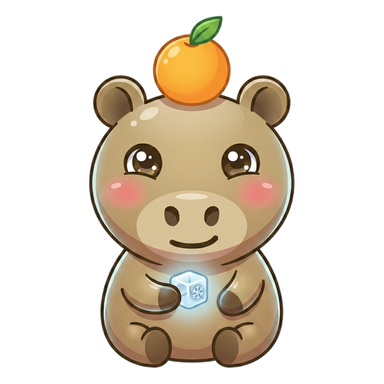
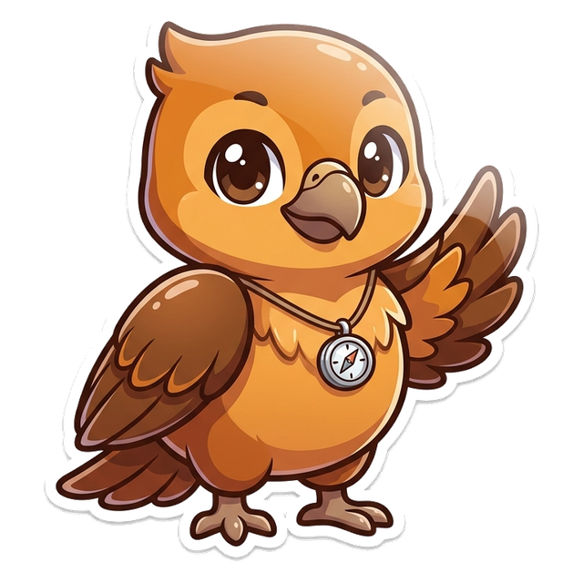
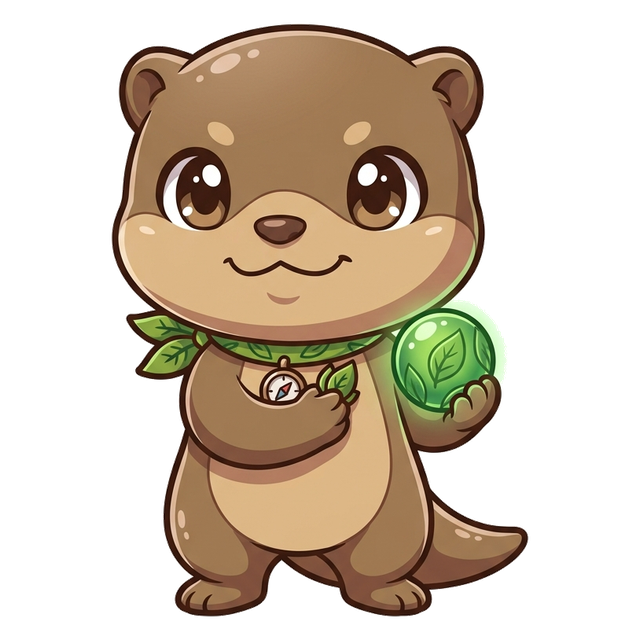
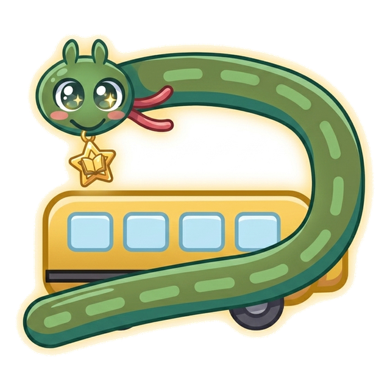
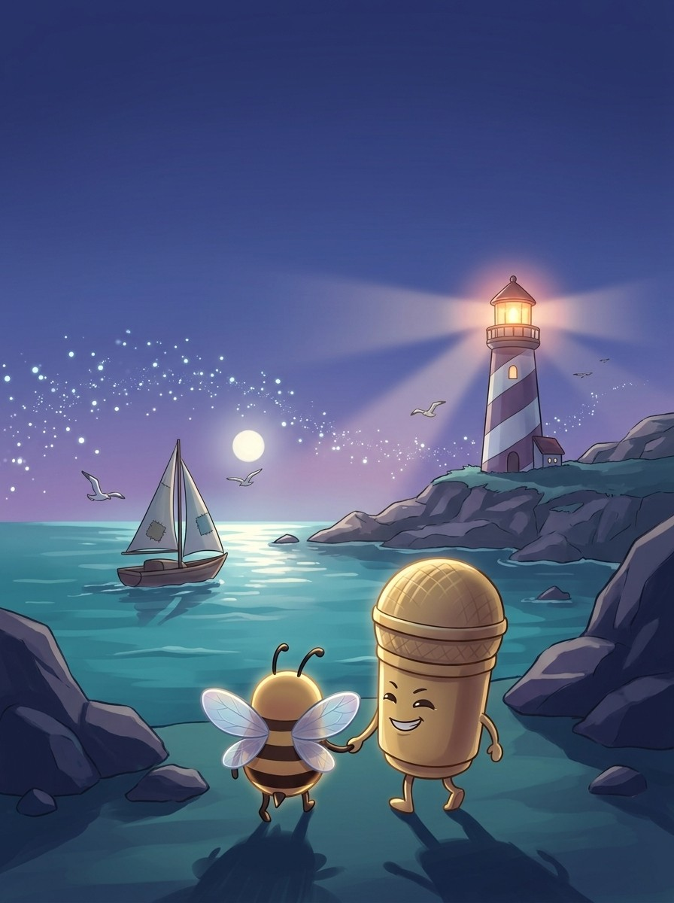
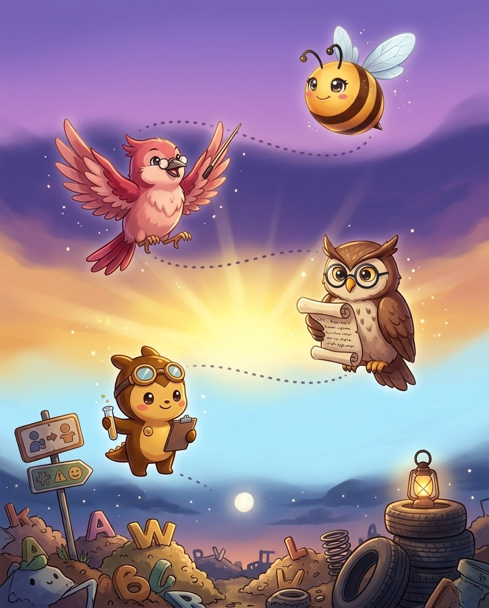
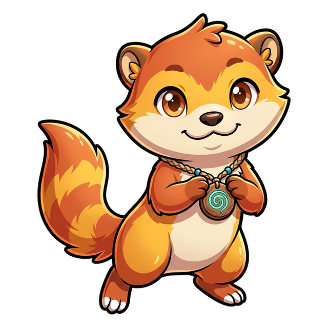
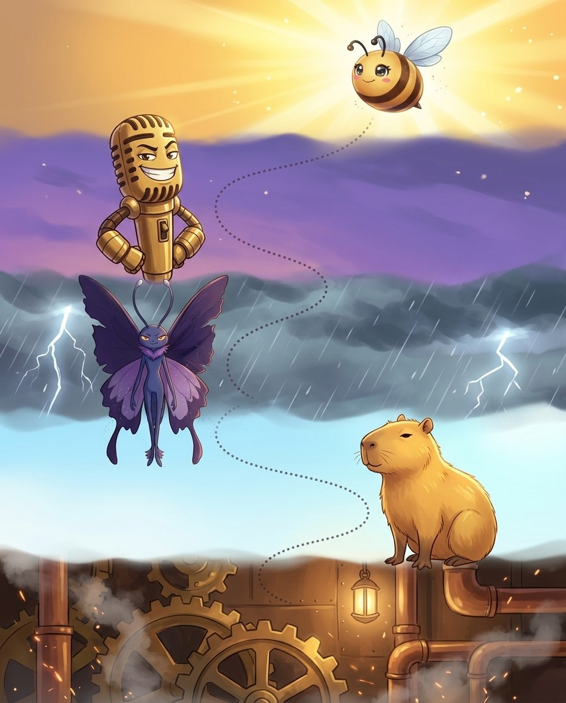

I'm Mic. Origins beyond the big four. Nothing in this book is filler — if a page is here, a real speller lost a real word without it.
1
Read the story
Each chapter opens as a storyboard. Vex sets the trap; the crew talks you out of it.
2
Steal the pro move
The dark box is how a champion thinks on stage. It works on brand-new words too.
3
Spell out loud, then write
Say it, spell it aloud, write it. The order matters — it is how the stage will ask for it.
4
Pass the checkpoint
A short quiz on the chapter, gated at 90%. Circle your answers, then verify at the back.
5
Play the game, then revise
Every chapter ends with a fun game, answer key at the back. Revise all words at the end and circle the ones you can spell and define.
Bizzing Bee · Far-Flung Words1
Far-Flung WordsThe cast
Bizzy — and this book's guide, Mic
The crew of Vol. 15
The ensemble for this volume. They host the drills and checkpoints; the work is still yours.
Bizzy — The little bee who spells the world back together, one petal at a time. · Mic — Turn it up — Big Mic makes every word heard.
Narly
OVR 85
Champion of the Wild Pond
The unicorn of the sea.

Capy
OVR 70
Speller of the Wild Pond
The calmest friend you’ll ever meet.
Blaze
OVR 65
Champion of the Wildhearts
Clever, quick and full of fire.
Pounce
OVR 78
Champion of the Wildhearts
Fastest paws in the wild.

Argentavis
OVR 71
Speller of the Colossal Ages
The greatest flyer the skies have ever seen.
Python
OVR 71
Speller of the Serpent Pack
Patient and powerful, never rushes a word.

Ottie
OVR 52
Speller of the Wildhearts
Playful to the last, holds on to friends.

Titanoboa
OVR 56
Speller of the Colossal Ages
The longest snake that ever lived — gentle for its size.
And the other one
Vex, the word-moth. Every trap in this book is one it has watched a speller fall into on a real stage.
Bizzing Bee · Far-Flung Words2

WELCOME TO
The Wide Strait
Past the lighthouse lies every language the big four forgot. Mic has the map.
Bizzing Bee · Far-Flung Words3
1Origins Beyond the Big Four · the Wide StraitDutch — the largest untaught origin
BizzyThe biggest gap in the course
MicTelling Dutch from German
VexYacht is the showpiece
ArgentavisThey gave us the sea
♫ narratedturn the page — the whole trick, explained →
4
Chapter 1 · Dutch — the largest untaught originThe idea · ★★★
The big idea
Dutch is the biggest gap in the general course: the full library holds 1,550 words of Dutch origin, more than any other language outside the classical four and French. Four centuries of shipping, trade and shared North Sea coastline pushed them in.
The pro move
CABOOSE
Heard. kuh-BOOSS — the last car of a train
Origin. Dutch kabuis, a ship's galley
Marker. Dutch writes a long oo sound as double o, not as ou or u
Spell. C A B O O S E
Family. schooner, sloop, cruiser — the same oo habit
Double o is the signature
Dutch writes a long oo sound as oo, and English kept it. Caboose from kabuis. Schooner from schoener. Sloop from sloep. Cruiser from kruiser. Snoop from snoepen. Spook from spook.
The sea vocabulary is almost all Dutch
The Dutch ran the seas in the seventeenth century and English took the words wholesale. Yacht from jacht.
Vex alert
Dutch words are short, concrete and nautical or domestic.
Sound trap
stoop sounds like stoup, stoep — at the mic, always ask for the meaning.
Check yourself
Book closed: caboose · cruiser · landscape, out loud, full words. At this level, almost right is still an elimination.
Bizzing Bee · Far-Flung Words5
Chapter 1 · Dutch — the largest untaught originPractice · ★★★
Say it. Spell it out loud. Write it.
caboose
/ kuh-BOOS / · /kəˈbus/
the car at the rear of a freight train, used by the train crew
hook: Dutch words are short, concrete and nautical or domestic.
The sailors crowded around the ▁▁▁ hoping to grab an extra bowl of stew before the storm hit.
cruiser
/ KROO-zer / · /ˈkruzər/
a car in which policemen cruise the streets; equipped with radiotelephonic communications to headquarters
hook: Dutch words are short, concrete and nautical or domestic.
The police ▁▁▁ rolled slowly down the foggy boulevard, its spotlight sweeping across darkened doorways.
landscape
/ LA-ndskayp / · /ˈlændskeɪp/
an expanse of scenery that can be seen in a single view
hook: Dutch words are short, concrete and nautical or domestic.
The political ▁▁▁ looks bleak without a change of administration.
measles
/ MEE-zuhlz / · /ˈmizəlz/
an acute and highly contagious viral disease marked by distinct red spots followed by a rash; occurs primarily in children
hook: Dutch words are short, concrete and nautical or domestic.
Before the vaccine was widely available, ▁▁▁ spread rapidly through schools and neighborhoods every winter.
furlough
/ f-UR-l-oh / · /fˈʌrloʊ/
a leave of absence granted to an enlisted person
hook: Dutch words are short, concrete and nautical or domestic.
The soldier came home on ▁▁▁ just in time for his sister's birthday.
boulevard
/ BUU-luh-vahrd / · /ˈbʊləvɑrd/
a wide street or thoroughfare
hook: Dutch words are short, concrete and nautical or domestic.
Tall oak trees lined both sides of the grand ▁▁▁ leading to the city center.
Bizzing Bee · Far-Flung Words6
Chapter 1 · Dutch — the largest untaught originPractice · ★★★
Say it. Spell it out loud. Write it.
brandy
/ BRA-ndee / · /ˈbrændi/
distilled from wine or fermented fruit juice
hook: Dutch words are short, concrete and nautical or domestic.
The innkeeper warmed his cold hands around a small glass of ▁▁▁ by the fireplace.
cookie
/ KUU-kee / · /ˈkʊki/
any of various small flat sweet cakes (`biscuit' is the British term)
hook: Dutch words are short, concrete and nautical or domestic.
He grabbed a warm chocolate chip ▁▁▁ from the tray as soon as it came out of the oven.
coleslaw
/ KOH-lslah / · /ˈkoʊlslɑ/
basically shredded cabbage
hook: Dutch words are short, concrete and nautical or domestic.
He piled tangy ▁▁▁ on top of his pulled pork sandwich at the summer cookout.
gherkin
/ GUR-kin / · /ˈɡʌrkɪn/
any of various small cucumbers pickled whole
hook: Dutch words are short, concrete and nautical or domestic.
She placed a crisp ▁▁▁ on the side of her sandwich for a tangy crunch.
knapsack
/ NA-psak / · /ˈnæpsæk/
a bag carried by a strap on your back or shoulder
hook: Dutch words are short, concrete and nautical or domestic.
She slung her ▁▁▁ over both shoulders and headed down the dusty path toward camp.
mannequin
/ MA-nuh-kihn / · /ˈmænəkɪn/
a woman who wears clothes to display fashions
hook: Dutch words are short, concrete and nautical or domestic.
She was too fat to be a ▁▁▁.
Bizzing Bee · Far-Flung Words7
Chapter 1 · Dutch — the largest untaught originRapid round · ★★★
More ammo — one line each.
onslaught/AW-nslawt/ a sudden and severe onset of trouble
poppycock/PAH-pee-kawk/ senseless talk
yacht/y-AH-t/ a private cruising vessel
waffle/WAH-fuhl/ a batter cake baked in a special griddle that presses a grid pattern into it
walrus/WAW-lruhs/ either of two large northern marine mammals having ivory tusks and tough hide over thick blubber
wainscot/WAY-nskuht/ panel forming the lower part of an interior wall when it is finished differently from the rest of the wall
burgomaster/BUR-guh-ma-ster/ a mayor of a municipality in Germany or Holland or Flanders or Austria
beleaguer/b-ih-l-EE-g-ur/ is to surround with troubles
bantam/BA-ntuhm/ any of various small breeds of fowl
polder/POH-lder/ low-lying land that has been reclaimed and is protected by dikes (especially in the Netherlands)
schooner/SKOO-ner/ a sailing vessel with two or more masts, with the foremast shorter than the mainmast
keelhaul/KEEL-hawl/ To punish a sailor by dragging them under the keel of a ship from one side to the other as a severe maritime punishment. The term is also used figuratively to mean to reprimand someone very harshly.
maelstrom/m-AY-l-s-t-r-uh-m/ a large powerful or violent whirlpool
stoop/STOOP/ an inclination of the top half of the body forward and downward
Lock them in
Pick 4 words from above. Say each one as you write it — three times, no shortcuts. The third copy is the one your hand remembers.
Bizzing Bee · Far-Flung Words8
Chapter 1 · Dutch — the largest untaught originRapid round · ★★★
More ammo — one line each.
snoop/SNOOP/ a spy who makes uninvited inquiries into the private affairs of others
sloop/SLOOP/ a sailing vessel with a single mast set about one third of the boat's length aft of the bow
Lock them in
Pick 2 words from above. Say each one as you write it — three times, no shortcuts. The third copy is the one your hand remembers.
Bizzing Bee · Far-Flung Words9
Chapter 1 · Dutch — the largest untaught originCheckpoint · ★★★
Blaze · Champion of the Wildhearts runs the checkpoint
Do you own the idea?
This checkpoint is gated at 90% — five of six, minimum. Circle, then verify at the back. Blaze's power is Steady Nerve — borrow it.
1. What does caboose mean?
Athe car at the rear of a freight train, used by the train crew
Bpanel forming the lower part of an interior wall when it is finished differently from the rest of the wall
Ceither of two large northern marine mammals having ivory tusks and tough hide over thick blubber
Da private cruising vessel
2. What does beleaguer mean?
Aa wide street or thoroughfare
Ba private cruising vessel
Ca sudden and severe onset of trouble
Dis to surround with troubles
3. Which spelling is correct?
Acaboose
Bceboose
Ccabboose
Dcabose
4. Which word fills the gap? “The sailors crowded around the ▁▁▁ hoping to grab an extra bowl of stew before the storm hit.”
Ameasles
Bschooner
Cfurlough
Dcaboose
5. Which word belongs to this chapter’s family?
Aaudience
Bcaboose
Ceffervescence
Ddemocracy
Dictation round
Hand this page to anyone nearby. They read the words from the answer key (Ch. 1 dictation, at the back) — you write, no peeking.
1.
2.
Bizzing Bee · Far-Flung Words10
Chapter 1 · Dutch — the largest untaught originGame · ★★★
Capy's puzzle page
Crossword
1
2
3
4
5
6
7
8
9
Across
4. any of various small flat sweet cakes (`biscuit' is the British term)
5. a leave of absence granted to an enlisted person
7. the car at the rear of a freight train, used by the train crew
8. an expanse of scenery that can be seen in a single view
9. distilled from wine or fermented fruit juice
Down
1. a car in which policemen cruise the streets
2. occurs primarily in children
3. a wide street or thoroughfare
6. basically shredded cabbage
Bizzing Bee · Far-Flung Words11
2Origins Beyond the Big Four · the Word JunkyardYiddish and Hebrew — two layers, one alphabet
BizzyTwo layers, not one
MicHebrew brought its plurals
VexThe ch is a throat sound
PythonThe endings -el and -ke
♫ narratedturn the page — the whole trick, explained →
12
Chapter 2 · Yiddish and Hebrew — two layers, one alphabetThe idea · ★★★
The big idea
Two related but distinct sources, and telling them apart decides the spelling. Yiddish arrived through everyday speech in the last hundred and fifty years, so its words are informal and use German-style clusters: sch-, kn-, tz-.
The pro move
CHUTZPAH
Heard. HOOTS-puh — extreme nerve
Origin. Yiddish khutspe, from Hebrew hutspah
Markers. the h sound is written ch; the ts is written tz; the final schwa is written a-h
Spell. C H U T Z P A H
Family. chutzpadik
Yiddish clusters
Yiddish freely begins words with clusters English otherwise avoids. Sch-: schlep, schmooze, schmaltz, schtick, schlock. Kn- with the k sounded: knish, knaidel.
Hebrew plurals are the giveaway
Hebrew brought its own grammar. The masculine plural is -im: seraphim, cherubim, kibbutzim, goyim, teraphim. The feminine plural is -oth or -ot: sephiroth, mitzvoth.
Vex alert
Yiddish markers: initial sch-, kn-, ts-/tz-, final -el and -ke.
Check yourself
Book closed: chutzpah · shibboleth · hallelujah, out loud, full words. At this level, almost right is still an elimination.
Bizzing Bee · Far-Flung Words13
Chapter 2 · Yiddish and Hebrew — two layers, one alphabetPractice · ★★★
Say it. Spell it out loud. Write it.
chutzpah
/ CHUH-tspah / · /ˈtʃʌtspɑ/
(Yiddish) unbelievable gall; insolence; audacity
hook: Yiddish markers: initial sch-, kn-, ts-/tz-, final -el and -ke.
It took real ▁▁▁ for the student to argue with the professor in front of the entire class.
shibboleth
/ SHIH-buh-lehth / · /ˈʃɪbəlɛθ/
a favorite saying of a sect or political group
hook: Yiddish markers: initial sch-, kn-, ts-/tz-, final -el and -ke.
The politician's speech was full of every familiar ▁▁▁, but offered no new ideas for solving the problem.
hallelujah
/ h-a-l-uh-l-OO-y-uh / · /hæləlˈujə/
means praise ye the Lord
hook: Yiddish markers: initial sch-, kn-, ts-/tz-, final -el and -ke.
The crowd shouted ▁▁▁ when the long-awaited rain finally arrived after the drought.
seraphim
/ sur-ah-FEEM / · /sʌrɑˈfim/
an angel of the first order; usually portrayed as the winged head of a child
hook: Yiddish markers: initial sch-, kn-, ts-/tz-, final -el and -ke.
Medieval artists painted the ▁▁▁ as radiant winged beings surrounding the throne of heaven.
cherubim
/ CHAIR-uh-bim / · /ˈtʃɛrəbɪm/
a sweet innocent baby
hook: Yiddish markers: initial sch-, kn-, ts-/tz-, final -el and -ke.
The painting on the ceiling was filled with rosy-cheeked ▁▁▁ floating among the clouds.
behemoth
/ buh-HEE-muhth / · /bəˈhiməθ/
someone or something that is abnormally large and powerful
hook: Yiddish markers: initial sch-, kn-, ts-/tz-, final -el and -ke.
The new aircraft carrier was a steel ▁▁▁ that dwarfed every other vessel in the harbor.
Bizzing Bee · Far-Flung Words14
Chapter 2 · Yiddish and Hebrew — two layers, one alphabetPractice · ★★★
Say it. Spell it out loud. Write it.
leviathan
/ luh-VEYE-uh-thuhn / · /ləˈvaɪəθən/
the largest or most massive thing of its kind
hook: Yiddish markers: initial sch-, kn-, ts-/tz-, final -el and -ke.
The cargo ship was a ▁▁▁ of the sea, so enormous it blocked the entire view of the harbor entrance.
jeremiad
/ jeh-ruh-MEYE-uhd / · /dʒɛrəˈmaɪəd/
a long and mournful complaint
hook: Yiddish markers: initial sch-, kn-, ts-/tz-, final -el and -ke.
A ▁▁▁ against any form of government.
kosher
/ KOH-sher / · /ˈkoʊʃər/
food that fulfills the requirements of Jewish dietary law
hook: Yiddish markers: initial sch-, kn-, ts-/tz-, final -el and -ke.
The deli on the corner proudly displayed a certificate in the window confirming that every ingredient and every preparation method used in the kitchen met the strict standards required to be ▁▁▁.
nosh
/ NAWSH / · /ˈnɔʃ/
(Yiddish) a snack or light meal
hook: Yiddish markers: initial sch-, kn-, ts-/tz-, final -el and -ke.
After school, Marcus liked to ▁▁▁ on crackers and cheese while doing his homework at the kitchen table.
schlep
/ SHLEP / · /ˈʃlɛp/
(Yiddish) an awkward and stupid person
hook: Yiddish markers: initial sch-, kn-, ts-/tz-, final -el and -ke.
schmooze
/ SHMOOZ / · /ˈʃmuz/
an informal conversation
hook: Yiddish markers: initial sch-, kn-, ts-/tz-, final -el and -ke.
At the company party, he managed to ▁▁▁ with every important executive in the room before dessert was served.
Bizzing Bee · Far-Flung Words15
Chapter 2 · Yiddish and Hebrew — two layers, one alphabetRapid round · ★★★
More ammo — one line each.
glitch/g-l-IH-ch/ a defect or malfunction in a plan or machine
kibitz/KIB-its/ make unwanted and intrusive comments
klutz/KLUHTS/ (Yiddish) a clumsy dolt
maven/MAY-vuhn/ someone who is dazzlingly skilled in any field
mensch/MEHNSH/ a decent responsible person with admirable characteristics
kvetch/KVEHCH/ (Yiddish) a constant complainer
bialy/bee-AH-lee/ flat crusty-bottomed onion roll
latke/LAHT-kuh/ made of grated potato and egg with a little flour
knish/kuh-NISH/ (Yiddish) a baked or fried turnover filled with potato or meat or cheese; often eaten as a snack
shtick/SHTIHK/ (Yiddish) a little; a piece
tchotchke/CHAHCH-kee/ (Yiddish) an attractive, unconventional woman
yarmulke/YAH-rmuh-lkuh/ a skullcap worn by religious Jews (especially at prayer)
matzo/MAHT-soh/ brittle flat bread eaten at Passover
challah/HAH-luh/ (Judaism) a loaf of white bread containing eggs and leavened with yeast; often formed into braided loaves and glazed with eggs before baking
Lock them in
Pick 4 words from above. Say each one as you write it — three times, no shortcuts. The third copy is the one your hand remembers.
Bizzing Bee · Far-Flung Words16
Chapter 2 · Yiddish and Hebrew — two layers, one alphabetRapid round · ★★★
More ammo — one line each.
golem/GOH-luhm/ (Jewish folklore) an artificially created human being that is given life by supernatural means
verklempt/fer-KLEMPT/ so overcome with emotion that you can hardly speak
dybbuk/DIB-uk/ (Jewish folklore) a demon that enters the body of a living person and controls that body's behavior
cabal/kuh-BAHL/ a clique (often secret) that seeks power usually through intrigue
Lock them in
Pick 4 words from above. Say each one as you write it — three times, no shortcuts. The third copy is the one your hand remembers.
Bizzing Bee · Far-Flung Words17
Chapter 2 · Yiddish and Hebrew — two layers, one alphabetCheckpoint · ★★★
Pounce · Champion of the Wildhearts runs the checkpoint
Do you own the idea?
This checkpoint is gated at 90% — five of six, minimum. Circle, then verify at the back. Pounce's power is Ice Cool — borrow it.
1. What does chutzpah mean?
A(Yiddish) unbelievable gall; insolence; audacity
Bmake unwanted and intrusive comments
C(Yiddish) a clumsy dolt
Dan angel of the first order; usually portrayed as the winged head of a child
2. What does klutz mean?
Athe largest or most massive thing of its kind
B(Yiddish) a clumsy dolt
C(Yiddish) a baked or fried turnover filled with potato or meat or cheese; often eaten as a snack
D(Yiddish) a little; a piece
3. Which word fills the gap? “It took real ▁▁▁ for the student to argue with the professor in front of the entire class.”
Amaven
Bknish
Cschlep
Dchutzpah
4. Which word belongs to this chapter’s family?
Achutzpah
Btableau
Cseismology
Dneuropathy
Dictation round
Hand this page to anyone nearby. They read the words from the answer key (Ch. 2 dictation, at the back) — you write, no peeking.
1.
2.
3.
Bizzing Bee · Far-Flung Words18
Chapter 2 · Yiddish and Hebrew — two layers, one alphabetGame · ★★★
3Origins Beyond the Big Four · the VibeRussian and Slavic — suffixes that name things
BizzySuffixes you can rely on
MicClusters English would break up
VexThe oy sound is written o-i
OttieWhat -nik and -ka build
♫ narratedturn the page — the whole trick, explained →
20
Chapter 3 · Russian and Slavic — suffixes that name thingsThe idea · ★★★
The big idea
Slavic words entered English in identifiable waves — Tsarist court and countryside, then Soviet politics, then space and weapons — and they are unusually easy to spell once you know the suffixes, because Slavic languages build meaning by stacking endings that survive transliteration intact.
Markers. the oy sound is written o-i; the ending is -ka
Spell. P E R E S T R O I K A
Family. glasnost, apparatchik — the same Soviet wave
The suffixes do the work
-nik names a person or adherent: sputnik a fellow traveller, refusenik, beatnik, kibitznik. -ka makes a noun, often small or feminine: babushka, matryoshka, balalaika, troika, perestroika, dacha.
oi, not oy
Russian transliteration writes the oy sound as o-i. Perestroika, not perestroyka. Troika, not troyka. Coulibiac keeps its own oddity.
Vex alert
Slavic suffixes are the whole game: -nik a person
Check yourself
Book closed: perestroika · intelligentsia · apparatchik, out loud, full words. At this level, almost right is still an elimination.
Bizzing Bee · Far-Flung Words21
Chapter 3 · Russian and Slavic — suffixes that name thingsPractice · ★★★
Say it. Spell it out loud. Write it.
perestroika
/ peh-ruh-STROY-kuh / · /pɛrəˈstrɔɪkə/
an economic policy adopted in the former Soviet Union; intended to increase automation and labor efficiency but it led eventually to the end of central planning in the Russian economy
hook: Slavic suffixes are the whole game: -nik a person, -ka a small thing, -ov/-ev a name, -shchina a condition.
The policy of ▁▁▁ brought sweeping economic reforms to the Soviet Union in the 1980s.
intelligentsia
/ ih-nteh-luh-JEH-ntsee-uh / · /ɪntɛləˈdʒɛntsiə/
an educated and intellectual elite
hook: Slavic suffixes are the whole game: -nik a person, -ka a small thing, -ov/-ev a name, -shchina a condition.
The city's ▁▁▁ met weekly to discuss literature, science, and the future of their country.
apparatchik
/ a-per-A-chihk / · /æpərˈætʃɪk/
a humorous but derogatory term for an official of a large organization (especially a political organization)
hook: Slavic suffixes are the whole game: -nik a person, -ka a small thing, -ov/-ev a name, -shchina a condition.
In the play, a fussy ▁▁▁ stamped every form twice before letting anyone pass.
kalashnikov
/ kuh-LA-shnih-kahv / · /kəˈlæʃnɪkɑv/
a type of submachine gun made in Russia
hook: Slavic suffixes are the whole game: -nik a person, -ka a small thing, -ov/-ev a name, -shchina a condition.
The documentary showed how the ▁▁▁ became one of the most widely distributed firearms in the world after World War II.
chastushka
/ chah-STOOSH-kah / · /tʃɑˈstuʃkɑ/
a short, witty Russian folk song, usually funny or teasing
hook: Slavic suffixes are the whole game: -nik a person, -ka a small thing, -ov/-ev a name, -shchina a condition.
The performer sang a witty ▁▁▁ that had the entire village crowd roaring with laughter at its clever rhymes.
matryoshka
/ mah-TRYOSH-kuh / · /mɑˈtrjɑʃkə/
A set of brightly painted hollow wooden Russian dolls of decreasing size, each one placed inside the next larger one; also called a nesting doll or Russian doll.
hook: Slavic suffixes are the whole game: -nik a person, -ka a small thing, -ov/-ev a name, -shchina a condition.
The ▁▁▁ my grandmother brought from Moscow had seven dolls nested inside one another.
Bizzing Bee · Far-Flung Words22
Chapter 3 · Russian and Slavic — suffixes that name thingsPractice · ★★★
Say it. Spell it out loud. Write it.
balalaika
/ bal-uh-LY-kuh / · /bæləˈlaɪkə/
a Russian musical instrument
hook: Slavic suffixes are the whole game: -nik a person, -ka a small thing, -ov/-ev a name, -shchina a condition.
The musician plucked the strings of his ▁▁▁ and filled the room with its distinctive, twangy melody.
babushka
/ b-uh-b-UH-sh-k-uh / · /bəbˈʌʃkə/
a woman's scarf
hook: Slavic suffixes are the whole game: -nik a person, -ka a small thing, -ov/-ev a name, -shchina a condition.
The elderly woman tied a floral ▁▁▁ tightly under her chin before stepping out into the cold wind.
stroganoff
/ s-t-r-OH-g-uh-n-aw-f / · /strˈoʊɡənɔf/
A Russian dish of sautéed pieces of beef served in a sauce of sour cream, named after the Stroganov family.
hook: Slavic suffixes are the whole game: -nik a person, -ka a small thing, -ov/-ev a name, -shchina a condition.
After a cold afternoon of raking leaves, nothing warmed the family up like a steaming bowl of beef ▁▁▁ over egg noodles.
coulibiac
/ koo-lee-BYAK / · /kuliˈbjæk/
A Russian dish of fish, especially salmon, baked inside a flaky pastry crust along with rice, mushrooms, onions, and hard-boiled eggs, often served at formal occasions.
hook: Slavic suffixes are the whole game: -nik a person, -ka a small thing, -ov/-ev a name, -shchina a condition.
The chef prepared an elegant ▁▁▁, wrapping salmon and rice in a golden pastry crust for the banquet.
cosmonaut
/ KAW-zmuh-nawt / · /ˈkɔzmənɔt/
a person trained to travel in a spacecraft
hook: Slavic suffixes are the whole game: -nik a person, -ka a small thing, -ov/-ev a name, -shchina a condition.
The Russians called their astronauts ▁▁▁.
commissar
/ KAH-muh-sahr / · /ˈkɑməsɑr/
an official of the Communist Party who was assigned to teach party principles to a military unit
hook: Slavic suffixes are the whole game: -nik a person, -ka a small thing, -ov/-ev a name, -shchina a condition.
The ▁▁▁ arrived at the regiment to ensure that the soldiers remained loyal to the party's ideology.
Bizzing Bee · Far-Flung Words23
Chapter 3 · Russian and Slavic — suffixes that name thingsRapid round · ★★★
More ammo — one line each.
samovar/SA-muh-vahr/ a metal urn with a spigot at the base; used in Russia to boil water for tea
sputnik/SPUH-tnihk/ a Russian artificial satellite
glasnost/GLA-snah-st/ a policy of the Soviet government allowing freer discussion of social problems
troika/t-r-OY-k-uh/ a team of 3 horses driven abreast
tundra/TUH-ndruh/ a vast treeless plain in the Arctic regions where the subsoil is permanently frozen
steppe/STEHP/ extensive plain without trees (associated with eastern Russia and Siberia)
borscht/BAWRSHT/ a Russian or Polish soup usually containing beet juice as a foundation
kasha/KAH-shuh/ boiled or baked buckwheat
beluga/bih-LOO-guh/ valuable source of caviar and isinglass; found in Black and Caspian seas
mammoth/MAM-uth/ Huge; enormous in size. Also a giant hairy elephant of the Ice Age.
dacha/DAH-chuh/ Russian country house
kopeck/KOH-pek/ A small Russian coin; a hundred of them equal one ruble.
Soviet/SOH-vee-uht/ an elected government council in a communist country
Bolshevik/BOH-lshuh-vihk/ emotionally charged terms used to refer to extreme radicals or revolutionaries
Lock them in
Pick 4 words from above. Say each one as you write it — three times, no shortcuts. The third copy is the one your hand remembers.
Bizzing Bee · Far-Flung Words24
Chapter 3 · Russian and Slavic — suffixes that name thingsRapid round · ★★★
More ammo — one line each.
polka/POH-lkah/ music with a fast, bouncy beat played for a lively couples' dance
robot/ROH-baht/ a mechanism that can move automatically
goulash/GOO-lahsh/ a rich meat stew highly seasoned with paprika
kielbasa/kee-LBAH-suh/ A type of Polish smoked sausage, typically made from pork and seasoned with garlic and spices, widely enjoyed throughout Eastern Europe and Polish-American communities. It is commonly grilled, boiled, or fried.
Lock them in
Pick 4 words from above. Say each one as you write it — three times, no shortcuts. The third copy is the one your hand remembers.
Bizzing Bee · Far-Flung Words25
Chapter 3 · Russian and Slavic — suffixes that name thingsCheckpoint · ★★★
Argentavis · Speller of the Colossal Ages runs the checkpoint
Do you own the idea?
This checkpoint is gated at 90% — five of six, minimum. Circle, then verify at the back. Argentavis's power is Unflappable — borrow it.
1. What does intelligentsia mean?
ARussian country house
Ban official of the Communist Party who was assigned to teach party principles to a military unit
Cmusic with a fast, bouncy beat played for a lively couples' dance
Dan educated and intellectual elite
2. What does kalashnikov mean?
Aa type of submachine gun made in Russia
Bemotionally charged terms used to refer to extreme radicals or revolutionaries
CA small Russian coin; a hundred of them equal one ruble.
Dan elected government council in a communist country
3. Which spelling is correct?
Akielbasa
Bkeelbasa
Ckeilbasa
Dkiellbasa
4. Which word fills the gap? “The city's ▁▁▁ met weekly to discuss literature, science, and the future of their country.”
Acosmonaut
Bkopeck
Crobot
Dintelligentsia
5. Which word belongs to this chapter’s family?
Aintelligentsia
Bseismology
Cknight
Dchocolate
Dictation round
Hand this page to anyone nearby. They read the words from the answer key (Ch. 3 dictation, at the back) — you write, no peeking.
1.
2.
Bizzing Bee · Far-Flung Words26
Chapter 3 · Russian and Slavic — suffixes that name thingsGame · ★★★
Pounce's puzzle page
Scramble & rescue
Unscramble
oalpk
knikaoaslhv
biccaoilu
nstomuoca
aosavmr
nstoslga
Rescue the vowels
gl_sn_st
_pp_r_tch_k
m_try_shk_
sp_tn_k
b_b_shk_
st_pp_
Bizzing Bee · Far-Flung Words27

4Origins Beyond the Big Four · the Big StagePortuguese — the first global vocabulary
BizzyThe first global sailors
MicThe nasal ending became -oon
VexAlbatross was rebuilt twice
Titanoboanh and lh
♫ narratedturn the page — the whole trick, explained →
28
Chapter 4 · Portuguese — the first global vocabularyThe idea · ★★★
The big idea
Portuguese sailors reached Africa, Brazil, India, China and Japan before any other Europeans, and English took a great deal of its first global vocabulary from them second-hand.
The pro move
ALBATROSS
Heard. AL-buh-tross
Origin. Portuguese alcatraz, a pelican, reshaped by Latin albus meaning white
Marker. Portuguese al- from Arabic, then an English respelling toward albus
Spell. A L B A T R O S S
Family. Alcatraz — the same word, unchanged
The -ão ending
Portuguese has a nasal ending written -ão, and English had no way to write it. It came out as -oon or -on. Galleon from galeão. Monsoon by way of monção.
Portuguese as a courier
Many of these words are only Portuguese in transit. Jacaranda and piranha are Tupi from Brazil. Cobra is Portuguese cobra de capelo, hooded snake. Mango is Tamil mankay, Portuguese manga.
Vex alert
Portuguese -ão became English -oon or -on.
Check yourself
Book closed: albatross · jacaranda · capoeira, out loud, full words. At this level, almost right is still an elimination.
Bizzing Bee · Far-Flung Words29
Chapter 4 · Portuguese — the first global vocabularyPractice · ★★★
Say it. Spell it out loud. Write it.
albatross
/ A-lbuh-trahs / · /ˈælbəˌtrɑs/
a very large white seabird with long narrow wings that soars over the ocean
hook: Portuguese -ão became English -oon or -on.
She was an ▁▁▁ around his neck.
jacaranda
/ jak-uh-RAN-duh / · /dʒækəˈrændə/
an important Brazilian timber tree yielding a heavy hard dark-colored wood streaked with black
hook: Portuguese -ão became English -oon or -on.
Every spring the streets of Pretoria are canopied in violet as thousands of ▁▁▁ trees burst into bloom.
capoeira
/ kap-oh-AY-rah / · /kæpoʊˈeɪrɑ/
A Brazilian martial art that combines elements of dance, acrobatics, and music, developed by enslaved Africans in Brazil as a disguised form of self-defense.
hook: Portuguese -ão became English -oon or -on.
The performers blended dance and martial arts in a dazzling display of ▁▁▁ that left the audience breathless.
flamingo
/ fluh-MIH-nggoh / · /fləˈmɪŋɡoʊ/
large pink to scarlet web-footed wading bird with down-bent bill; inhabits brackish lakes
hook: Portuguese -ão became English -oon or -on.
A solitary ▁▁▁ stood on one leg at the edge of the shallow lagoon, its bright pink feathers vivid against the blue water.
molasses
/ m-uh-l-A-s-uh-z / · /məlˈæsəz/
thick dark syrup produced by boiling down juice from sugar cane; especially during sugar refining
hook: Portuguese -ão became English -oon or -on.
Grandma's gingerbread cookies were extraordinarily chewy because she used an extra spoonful of dark ▁▁▁ in the batter.
marmalade
/ MAH-rmuh-layd / · /ˈmɑrməleɪd/
a preserve made of the pulp and rind of citrus fruits
hook: Portuguese -ão became English -oon or -on.
She spread a thick layer of orange ▁▁▁ on her toast and watched the sunlight pour through the kitchen global.window.
Bizzing Bee · Far-Flung Words30
Chapter 4 · Portuguese — the first global vocabularyPractice · ★★★
Say it. Spell it out loud. Write it.
commando
/ kuh-MA-ndoh / · /kəˈmændoʊ/
a member of a military unit trained as shock troops for hit-and-run raids
hook: Portuguese -ão became English -oon or -on.
The lone ▁▁▁ slipped behind enemy lines under cover of darkness to complete the mission.
monsoon
/ mah-NSOON / · /mɑˈnsun/
a seasonal wind in southern Asia; blows from the southwest (bringing rain) in summer and from the northeast in winter
hook: Portuguese -ão became English -oon or -on.
The ▁▁▁ arrived in July, flooding the streets and filling the dry riverbeds overnight.
piranha
/ p-ih-r-A-n-h-uh / · /pɪrˈænhə/
a small South American fish
hook: Portuguese -ão became English -oon or -on.
The explorer nervously watched the ▁▁▁ swarm beneath the surface before deciding not to cross the river.
anhinga
/ an-HING-gah / · /ænˈhɪŋɡɑ/
fish-eating bird of warm inland waters having a long flexible neck and slender sharp-pointed bill
hook: Portuguese -ão became English -oon or -on.
The ▁▁▁ perched on a cypress branch with its wings spread wide, drying its feathers in the Florida sun after a dive.
feijoada
/ fay-ZHWAH-dah / · /feɪˈʒwɑdɑ/
Brazil's most celebrated national dish, a hearty stew of black beans slow-cooked with a variety of salted and smoked pork and beef cuts, traditionally served with rice, collard greens, and orange slices.
hook: Portuguese -ão became English -oon or -on.
The family gathered every Saturday around a huge pot of ▁▁▁, the black bean and pork stew simmering for hours.
palaver
/ puh-LAV-er / · /pəˈlævər/
flattery intended to persuade
hook: Portuguese -ão became English -oon or -on.
Coach Williams had no patience for ▁▁▁ before the game and told the team to stop chattering and focus on their strategy.
Bizzing Bee · Far-Flung Words31
Chapter 4 · Portuguese — the first global vocabularyRapid round · ★★★
More ammo — one line each.
mangrove/MA-ngrohv/ a tropical tree or shrub bearing fruit that germinates while still on the tree and having numerous prop roots that eventually form an impenetrable mass and are important in land building
tapioca/tap-ee-OH-kuh/ granular preparation of cassava starch used to thicken especially puddings
veranda/ver-A-nduh/ a porch along the outside of a building (sometimes partly enclosed)
cuspidor/KUS-pih-dor/ a receptacle for spit (usually in a public place)
pagoda/puh-GOH-duh/ an Asian temple; usually a pyramidal tower with an upward curving roof
madeira/muh-DIH-ruh/ a Brazilian river; tributary of the Amazon River
labrador/LA-bruh-dawr/ a rugged mainland region of eastern Canada
jaguar/j-A-g-w-ah-r/ the largest cat in the western hemisphere
pataca/puh-TAH-kuh/ the basic unit of money in Macao
jacana/zhah-suh-NAH/ A tropical wading bird known for its remarkably long toes and claws, which allow it to walk across floating vegetation on the surface of ponds and marshes.
macaw/muh-KAW/ long-tailed brilliantly colored parrot of Central America and South America; among the largest and showiest of parrots
mango/MA-nggoh/ large evergreen tropical tree cultivated for its large oval fruit
teak/TEEK/ hard, strong yellowish-brown wood used for furniture and ships, resistant to insects
cobra/KOH-bruh/ venomous Asiatic and African elapid snakes that can expand the skin of the neck into a hood
Lock them in
Pick 4 words from above. Say each one as you write it — three times, no shortcuts. The third copy is the one your hand remembers.
Bizzing Bee · Far-Flung Words32
Chapter 4 · Portuguese — the first global vocabularyRapid round · ★★★
More ammo — one line each.
samba/SAH-mbuh/ large west African tree having large palmately lobed leaves and axillary cymose panicles of small white flowers and one-winged seeds; yields soft white to pale yellow wood
dodo/DOH-doh/ someone whose style is out of fashion
Lock them in
Pick 2 words from above. Say each one as you write it — three times, no shortcuts. The third copy is the one your hand remembers.
Bizzing Bee · Far-Flung Words33
Chapter 4 · Portuguese — the first global vocabularyCheckpoint · ★★★
Python · Speller of the Serpent Pack runs the checkpoint
Do you own the idea?
This checkpoint is gated at 90% — five of six, minimum. Circle, then verify at the back. Python's power is Mind Palace — borrow it.
1. What does molasses mean?
Alarge pink to scarlet web-footed wading bird with down-bent bill; inhabits brackish lakes
Bfish-eating bird of warm inland waters having a long flexible neck and slender sharp-pointed bill
Cthick dark syrup produced by boiling down juice from sugar cane; especially during sugar refining
Dgranular preparation of cassava starch used to thicken especially puddings
2. What does teak mean?
Ahard, strong yellowish-brown wood used for furniture and ships, resistant to insects
Ba member of a military unit trained as shock troops for hit-and-run raids
Can important Brazilian timber tree yielding a heavy hard dark-colored wood streaked with black
Dthick dark syrup produced by boiling down juice from sugar cane; especially during sugar refining
3. Which spelling is correct?
Afeijoadda
Bfiijoada
Cfiejoada
Dfeijoada
4. Which word fills the gap? “Grandma's gingerbread cookies were extraordinarily chewy because she used an extra spoonful of dark ▁▁▁ in the batter.”
Amonsoon
Bveranda
Cmolasses
Dsamba
Dictation round
Hand this page to anyone nearby. They read the words from the answer key (Ch. 4 dictation, at the back) — you write, no peeking.
1.
2.
Bizzing Bee · Far-Flung Words34
Chapter 4 · Portuguese — the first global vocabularyGame · ★★★
Argentavis's puzzle page
Crossword
1
2
3
4
5
6
7
8
9
10
Across
4. fish-eating bird of warm inland waters having a long flexible neck and slender…
6. a very large white seabird with long narrow wings that soars over the ocean
7. a member of a military unit trained as shock troops for hit-and-run raids
8. a seasonal wind in southern Asia
9. A Brazilian martial art that combines elements of dance
10. a preserve made of the pulp and rind of citrus fruits
Down
1. large pink to scarlet web-footed wading bird with down-bent bill
2. a small South American fish
3. thick dark syrup produced by boiling down juice from sugar cane
5. an important Brazilian timber tree yielding a heavy hard dark-colored wood…
Bizzing Bee · Far-Flung Words35
5Origins Beyond the Big Four · the Proving GroundCeltic — Irish, Welsh and Gaelic spelling logic
VexLetters that are not sounds
MicIrish adds an h to soften
ArgentavisWelsh uses w and y as vowels
ZoomiesIrish vowels can be grammar
♫ narratedturn the page — the whole trick, explained →
36
Chapter 5 · Celtic — Irish, Welsh and Gaelic spelling log…The idea · ★★★
The big idea
Celtic loanwords look impossible because Irish and Welsh use the Roman alphabet for sounds it was never designed for, and they solved that with letter pairs rather than new letters. Once you know what those pairs mean, the words stop being arbitrary.
The pro move
BODHRAN
Heard. BOW-rawn — an Irish frame drum
Origin. Irish bodhrán, from bodhar meaning deaf or dull
Marker. Irish d-h is lenited — the d goes silent, so you hear a vowel where letters sit
Spell. B O D H R A N
Family. bodhranai — the player
Irish lenition — the added h
Irish softens a consonant by writing an h after it, and the result often sounds nothing like the letters. bh and mh sound like v or w. dh and gh often go silent. th sounds like h.
Irish slender vowels
Irish marks whether a consonant is slender or broad by the vowel written beside it, which is why Irish words carry vowels you do not pronounce. Taoiseach has a-o-i together.
Vex alert
Irish spells a slender consonant with a following i and lenites with h: -bh- and -dh- sound…
Sound trap
loch sounds like lock, lakh — at the mic, always ask for the meaning.
Check yourself
Book closed: leprechaun · donnybrook · smithereens, out loud, full words. At this level, almost right is still an elimination.
a heavily armed Scottish or Irish mercenary soldier serving Gaelic Irish chiefs from the 1200s to 1500s.
hook: Irish spells a slender consonant with a following i and lenites with h: -bh- and -dh- sound like v and silence.
The chieftain's ▁▁▁ stood guard with their heavy axes, ready to defend the castle gates.
bodhran
/ BOW-rawn / · /ˈbaʊrɔn/
A shallow, single-headed Irish frame drum held in one hand and struck with a double-headed beater called a tipper, central to traditional Irish folk music.
hook: Irish spells a slender consonant with a following i and lenites with h: -bh- and -dh- sound like v and silence.
The folk musician struck the ▁▁▁ with a quick flick of the tipper, filling the pub with a deep, rhythmic beat.
sporran
/ SPOR-un / · /ˈspɔrʌn/
a fur or leather pouch worn at the front of the kilt as part of the traditional dress of Scottish Highlanders
hook: Irish spells a slender consonant with a following i and lenites with h: -bh- and -dh- sound like v and silence.
Cameron adjusted his ▁▁▁ so it hung squarely in front of his kilt before marching in the Highland games parade.
shamrock
/ SHA-mrahk / · /ˈʃæmrɑk/
creeping European clover having white to pink flowers and bright green leaves; naturalized in United States; widely grown for forage
hook: Irish spells a slender consonant with a following i and lenites with h: -bh- and -dh- sound like v and silence.
On Saint Patrick's Day, Brendan wore a fresh ▁▁▁ pinned to his jacket in honor of his Irish heritage.
banshee
/ ba-NSHEE / · /bæˈnʃi/
(Irish folklore) a female spirit who wails to warn of impending death
hook: Irish spells a slender consonant with a following i and lenites with h: -bh- and -dh- sound like v and silence.
In Irish legend, hearing a ▁▁▁ wail outside your window meant someone nearby would soon die.
hooligan
/ HOO-lih-guhn / · /ˈhulɪɡən/
a cruel and brutal fellow
hook: Irish spells a slender consonant with a following i and lenites with h: -bh- and -dh- sound like v and silence.
The ▁▁▁ smashed the shop window and ran off laughing before the police arrived.
6Origins Beyond the Big Four · the Grey SeaTurkish and Persian — the road words
BizzyWords that travelled a long road
MicTurkish gave us the court
VexOne root, three spellings
NarlyChess is entirely Persian
♫ narratedturn the page — the whole trick, explained →
44
Chapter 6 · Turkish and Persian — the road wordsThe idea · ★★★
The big idea
The Silk Road and the Ottoman court pushed a long list of words westward, and nearly all of them reached English through at least one other language, which is why their spellings look inconsistent.
The pro move
SERENDIPITY
Heard. ser-un-DIP-ih-tee — a happy accident
Origin. Serendip, the Persian name for Sri Lanka, plus an English suffix
Note. coined by Horace Walpole from a Persian fairy tale, so the root is a place name
Spell. S E R E N D I P I T Y
Family. serendipitous
Persian building blocks
-stan means land: Afghanistan, Hindustan. -abad means city. bad- relates to wind, giving badgir a wind-catcher.
Turkish suffixes
-lik makes an abstract noun or a container. -ci or -ji marks a trade: the origin of words like the Ottoman title.
Vex alert
Persian gave English -stan, bad-, -abad and the garden words.
Sound trap
bazaar sounds like bizarre · horde sounds like hoard — at the mic, always ask for the meaning.
Check yourself
Book closed: serendipity · janissary · Achaemenian, out loud, full words. At this level, almost right is still an elimination.
Bizzing Bee · Far-Flung Words45
Chapter 6 · Turkish and Persian — the road wordsPractice · ★★★
Say it. Spell it out loud. Write it.
serendipity
/ s-eh-r-uh-n-d-IH-p-ih-t-ee / · /sɛrəndˈɪpɪti/
means good fortune or luck
hook: Persian gave English -stan, bad-, -abad and the garden words. Turkish gave -lik, -ci and the court words.
By pure ▁▁▁, she found the missing puzzle piece tucked inside an old library book.
janissary
/ JAN-ih-sair-ee / · /ˈdʒænɪsɛri/
a loyal supporter
hook: Persian gave English -stan, bad-, -abad and the garden words. Turkish gave -lik, -ci and the court words.
The young prince trusted his faithful ▁▁▁ to guard the castle gates each night.
Achaemenian
/ ak-ih-MEE-nee-an / · /ækɪˈminiæn/
Of or relating to the Achaemenid dynasty, the ruling Persian royal house founded by Achaemenes that governed the Persian Empire from the sixth to the fourth centuries BCE.
hook: Persian gave English -stan, bad-, -abad and the garden words. Turkish gave -lik, -ci and the court words.
The ▁▁▁ empire under Cyrus the Great stretched from Persia to the edges of India.
zumbooruk
/ ZUM-buh-ruk / · /ˈzʌmbərʌk/
a small cannon fired from a swivel on a camel's back
hook: Persian gave English -stan, bad-, -abad and the garden words. Turkish gave -lik, -ci and the court words.
A ▁▁▁ was carried by camel.
tambourine
/ t-a-m-b-ur-EE-n / · /ˌtæmbərˈin/
a small drum consisting of a circular frame with skin stretched over it
hook: Persian gave English -stan, bad-, -abad and the garden words. Turkish gave -lik, -ci and the court words.
She shook the ▁▁▁ enthusiastically during the school's folk music performance.
checkmate
/ CHEH-kmayt / · /ˈtʃɛkmeɪt/
complete victory
hook: Persian gave English -stan, bad-, -abad and the garden words. Turkish gave -lik, -ci and the court words.
Kasparov ▁▁▁ his opponent after only a few moves.
Bizzing Bee · Far-Flung Words46
Chapter 6 · Turkish and Persian — the road wordsPractice · ★★★
Say it. Spell it out loud. Write it.
paradise
/ PEH-ruh-deyes / · /ˈpɛrədaɪs/
any place of complete bliss and delight and peace
hook: Persian gave English -stan, bad-, -abad and the garden words. Turkish gave -lik, -ci and the court words.
After weeks of freezing rain, the warm sunny beach felt like pure ▁▁▁ to the exhausted travelers.
caravan
/ KA-ruh-van / · /ˈkærəvæn/
a procession (of wagons or mules or camels) traveling together in single file
hook: Persian gave English -stan, bad-, -abad and the garden words. Turkish gave -lik, -ci and the court words.
As the sun set over the Sahara, a ▁▁▁ of twelve camels silhouetted against the orange sky made its slow way toward the distant oasis.
jackal
/ j-A-k-uh-l / · /dʒˈækəl/
a wild dog of Asia and Africa
hook: Persian gave English -stan, bad-, -abad and the garden words. Turkish gave -lik, -ci and the court words.
The lean ▁▁▁ crept silently along the desert's edge, searching for scraps left by lions.
mogul
/ MOH-guhl / · /ˈmoʊɡəl/
a bump on a ski slope
hook: Persian gave English -stan, bad-, -abad and the garden words. Turkish gave -lik, -ci and the court words.
The fearless snowboarder launched off every ▁▁▁ on the steep slope with breathtaking confidence, catching air on each icy bump before landing smoothly and racing on toward the finish line.
bazaar
/ b-uh-z-AH-r / · /bəzˈɑr/
a marketplace especially in the Middle East
hook: Persian gave English -stan, bad-, -abad and the garden words. Turkish gave -lik, -ci and the court words.
Walking through the colorful ▁▁▁, the travelers were dazzled by stalls overflowing with handwoven rugs, fragrant spices, gleaming copper pots, and vendors calling out enthusiastically in a dozen different languages.
dervish
/ DUR-vihsh / · /ˈdʌrvɪʃ/
an ascetic Muslim monk; a member of an order noted for devotional exercises involving bodily movements
hook: Persian gave English -stan, bad-, -abad and the garden words. Turkish gave -lik, -ci and the court words.
The whirling ▁▁▁ spun gracefully in circles as part of a centuries-old spiritual ceremony.
Bizzing Bee · Far-Flung Words47
Chapter 6 · Turkish and Persian — the road wordsRapid round · ★★★
More ammo — one line each.
turban/t-UR-b-uh-n/ a headdress consisting of a long cloth that is wrapped around a cap or directly around the head
baklava/BAH-kluh-vah/ rich Middle Eastern cake made of thin layers of flaky pastry filled with nuts and honey
sherbet/SHUR-buht/ a frozen dessert made primarily of fruit juice and sugar, but also containing milk or egg-white or gelatin
naphtha/NA-fthuh/ any of various volatile flammable liquid hydrocarbon mixtures; used chiefly as solvents
satrap/SAY-trap/ a governor of a province in ancient Persia
vizier/vih-ZEER/ a high official in a Muslim government (especially in the Ottoman Empire)
pasha/puh-SHAH/ a civil or military authority in Turkey or Egypt
kiosk/KEE-awsk/ small area set off by walls for special use
divan/dih-VAN/ a long backless sofa (usually with pillows against a wall)
tiara/tee-AR-uh/ A small, jeweled crown worn on the head, especially by women
horde/h-AW-r-d/ a large group a multitude
abdest/AB-dest/ The ritual washing of hands, face, and feet performed by Muslims before prayer; the Islamic practice of ritual purification with water.
yogurt/YOH-gert/ a custard-like food made from curdled milk
tulip/TOO-luhp/ any of numerous perennial bulbous herbs having linear or broadly lanceolate leaves and usually a single showy flower
Lock them in
Pick 4 words from above. Say each one as you write it — three times, no shortcuts. The third copy is the one your hand remembers.
Bizzing Bee · Far-Flung Words48
Chapter 6 · Turkish and Persian — the road wordsRapid round · ★★★
More ammo — one line each.
azure/A-zher/ a light shade of blue
jasmine/JA-zmuhn/ any of several shrubs and vines of the genus Jasminum chiefly native to Asia
Lock them in
Pick 2 words from above. Say each one as you write it — three times, no shortcuts. The third copy is the one your hand remembers.
Bizzing Bee · Far-Flung Words49
Chapter 6 · Turkish and Persian — the road wordsCheckpoint · ★★★
Titanoboa · Speller of the Colossal Ages runs the checkpoint
Do you own the idea?
This checkpoint is gated at 90% — five of six, minimum. Circle, then verify at the back. Titanoboa's power is Mind Palace — borrow it.
1. What does janissary mean?
Aa loyal supporter
Ba bump on a ski slope
Ca frozen dessert made primarily of fruit juice and sugar, but also containing milk or egg-white or gelatin
Dany of numerous perennial bulbous herbs having linear or broadly lanceolate leaves and usually a single showy flower
2. What does horde mean?
Aa light shade of blue
Ba loyal supporter
Ca wild dog of Asia and Africa
Da large group a multitude
3. Which spelling is correct?
Abazar
Bbazaer
Cbazaar
Dbazaarr
4. Which word fills the gap? “The young prince trusted his faithful ▁▁▁ to guard the castle gates each night.”
Akiosk
Bjanissary
Cdervish
Dyogurt
5. Which word belongs to this chapter’s family?
Ahabeas corpus
Bcompetition
Cjanissary
Ddecaffeinate
Dictation round
Hand this page to anyone nearby. They read the words from the answer key (Ch. 6 dictation, at the back) — you write, no peeking.
1.
2.
Bizzing Bee · Far-Flung Words50
Chapter 6 · Turkish and Persian — the road wordsGame · ★★★
Ottie's puzzle page
Scramble & rescue
Unscramble
yguort
srhtbee
aacanrv
lmgou
mcehiAeanan
skiok
Rescue the vowels
t_l_p
z_mb__r_k
k__sk
Ach__m_n__n
t_mb__r_n_
s_tr_p
Bizzing Bee · Far-Flung Words51
7Origins Beyond the Big Four · the MeadowMalay and the Austronesian words
BizzyThe trade language of the islands
MicThe -ng ending
OttieSimple syllables, simple spelling
CapyForest person
♫ narratedturn the page — the whole trick, explained →
52
Chapter 7 · Malay and the Austronesian wordsThe idea · ★★★
The big idea
Malay was the trade language of the whole East Indies, so English took its Southeast Asian vocabulary mostly through Malay, often via Portuguese or Dutch shipping.
The pro move
BINTURONG
Heard. BIN-tuh-rong — a bearcat of Southeast Asia
Origin. Malay binturung
Marker. simple syllables — bin, tu, rong — and the final n-g typical of Malay
Spell. B I N T U R O N G
Family. linsang, pangolin — the same regional set
Simple open syllables
Malay builds words from consonant-vowel syllables with almost no clusters, so the spelling follows the sound closely. Rattan, batik, sarong, sago, kapok, parang, proa, tempeh, durian.
The -ng ending
Malay ends a great many words in -ng, and English kept it. Sarong, gong, binturong, linsang, parang, orangutan from orang hutan meaning forest person.
Vex alert
Malay syllables are simple and open, so the words look regular: rattan, batik, sarong.
Check yourself
Book closed: binturong · orangutan · mangosteen, out loud, full words. At this level, almost right is still an elimination.
Bizzing Bee · Far-Flung Words53
Chapter 7 · Malay and the Austronesian wordsPractice · ★★★
Say it. Spell it out loud. Write it.
binturong
/ BIN-tuh-rong / · /ˈbɪntərɑŋ/
arboreal civet of Asia having a long prehensile tail and shaggy black hair
hook: Malay syllables are simple and open, so the words look regular: rattan, batik, sarong.
The ▁▁▁ draped its long prehensile tail around the branch like a fifth limb as it munched on figs high in the rainforest canopy.
orangutan
/ aw-RA-nguh-tan / · /ɔˈræŋətæn/
large long-armed ape of Borneo and Sumatra having arboreal habits
hook: Malay syllables are simple and open, so the words look regular: rattan, batik, sarong.
The ▁▁▁ swung effortlessly from branch to branch high in the rainforest canopy.
mangosteen
/ MA-nggoh-steen / · /ˈmæŋɡoʊstin/
East Indian tree with thick leathery leaves and edible fruit
hook: Malay syllables are simple and open, so the words look regular: rattan, batik, sarong.
When she bit into the juicy white flesh of the ▁▁▁, she immediately understood why it's called the queen of fruits.
cassowary
/ KA-suh-weh-ree / · /ˈkæsəwɛri/
large black flightless bird of Australia and New Guinea having a horny head crest
hook: Malay syllables are simple and open, so the words look regular: rattan, batik, sarong.
The ▁▁▁ at the wildlife park towered over us and regarded us with its bright orange eyes.
casuarina
/ kazh-oo-uh-REE-nuh / · /kæʒuəˈrinə/
A tree with jointed stems and tiny scale-like leaves; some give heavy hardwood.
hook: Malay syllables are simple and open, so the words look regular: rattan, batik, sarong.
The ▁▁▁ tree swayed gracefully in the sea breeze, its slender drooping branches resembling the feathers of a cassowary.
pandanus
/ pa-NDAY-nuhs / · /pæˈndeɪnəs/
a tropical tree whose leaves are woven into mats and baskets
hook: Malay syllables are simple and open, so the words look regular: rattan, batik, sarong.
The artisan wove a beautiful basket from ▁▁▁ fibers, using a technique passed down for generations.
Bizzing Bee · Far-Flung Words54
Chapter 7 · Malay and the Austronesian wordsPractice · ★★★
Say it. Spell it out loud. Write it.
babirusa
/ bah-bih-ROO-suh / · /bɑbɪˈrusə/
Indonesian wild pig with enormous curved canine teeth
hook: Malay syllables are simple and open, so the words look regular: rattan, batik, sarong.
The ▁▁▁ stunned visitors at the wildlife sanctuary with its bizarre, curved tusks that curled back toward its forehead.
rambutan
/ ram-BOO-tan / · /ræmˈbutæn/
Malayan tree bearing spiny red fruit
hook: Malay syllables are simple and open, so the words look regular: rattan, batik, sarong.
At the tropical market, she cracked open a ▁▁▁ and marveled at its sweet, juicy flesh.
pangolin
/ PANG-guh-lin / · /ˈpæŋɡəlɪn/
toothless mammal of southern Africa and Asia having a body covered with horny scales and a long snout for feeding on ants and termites
hook: Malay syllables are simple and open, so the words look regular: rattan, batik, sarong.
The ▁▁▁ curled into a tight armored ball the moment it sensed danger approaching through the tall grass.
cockatoo
/ KAH-kuh-too / · /ˈkɑkətu/
white or light-colored crested parrot of the Australian region; often kept as cage birds
hook: Malay syllables are simple and open, so the words look regular: rattan, batik, sarong.
The bright white ▁▁▁ spread its yellow crest wide and shrieked whenever a stranger approached the cage.
linsang
/ LIN-sang / · /ˈlɪnsæŋ/
a small, catlike, tree-dwelling mammal of Asia and Africa
hook: Malay syllables are simple and open, so the words look regular: rattan, batik, sarong.
A ▁▁▁ crept along the branch.
gingham
/ GIH-nguhm / · /ˈɡɪŋəm/
a clothing fabric in a plaid weave
hook: Malay syllables are simple and open, so the words look regular: rattan, batik, sarong.
She wore a cheerful blue and white ▁▁▁ dress to the summer picnic.
Bizzing Bee · Far-Flung Words55
Chapter 7 · Malay and the Austronesian wordsRapid round · ★★★
More ammo — one line each.
rattan/ra-TAN/ climbing palm of Sri Lanka and southern India remarkable for the great length of the stems which are used for malacca canes
sarong/ser-AWNG/ a loose skirt consisting of brightly colored fabric wrapped around the body; worn by both women and men in the South Pacific
batik/buh-TEEK/ a dyed fabric; a removable wax is used where the dye is not wanted
parang/pah-RANG/ a stout straight knife used in Malaysia and Indonesia
dugong/DOO-gong/ sirenian tusked mammal found from eastern Africa to Australia; the flat tail is bilobate
tempeh/TEM-pay/ A fermented soy product originating from Indonesia, made by culturing cooked soybeans with a mold to form a firm, protein-rich cake.
durian/DYOOR-ee-un/ tree of southeastern Asia having edible oval fruit with a hard spiny rind
gecko/GEH-koh/ any of various small chiefly tropical and usually nocturnal insectivorous terrestrial lizards typically with immovable eyelids; completely harmless
kapok/KAY-pahk/ A fluffy plant fiber used to stuff cushions and life jackets.
raffia/RAF-ee-uh/ A strong fiber from palm leaves, used to weave baskets, mats, and hats.
amok/uh-MUHK/ frenzied as if possessed by a demon
sago/SAY-goh/ a starchy food from palm stems, used to thicken soups and puddings
proa/PROH-ah/ A type of fast, narrow outrigger sailing canoe or boat originating in the Malay Archipelago, traditionally built with one or two outrigger floats for stability.
bamboo/ba-MBOO/ the tall, hard, hollow woody stems of a tropical grass plant
Lock them in
Pick 4 words from above. Say each one as you write it — three times, no shortcuts. The third copy is the one your hand remembers.
Bizzing Bee · Far-Flung Words56
Chapter 7 · Malay and the Austronesian wordsRapid round · ★★★
More ammo — one line each.
paddy/PA-dee/ A flooded field where rice is grown; also rice still in its husk.
ikat/EE-kaht/ A dyeing technique used to create fabric in which the yarn is resist-dyed in patterns before weaving, producing designs with characteristically blurred or feathered edges.
Lock them in
Pick 2 words from above. Say each one as you write it — three times, no shortcuts. The third copy is the one your hand remembers.
Bizzing Bee · Far-Flung Words57
Chapter 7 · Malay and the Austronesian wordsCheckpoint · ★★★

Zoomies · Speller of the Wild Pond runs the checkpoint
Do you own the idea?
This checkpoint is gated at 90% — five of six, minimum. Circle, then verify at the back. Zoomies's power is Deep Knowing — borrow it.
1. What does babirusa mean?
Atoothless mammal of southern Africa and Asia having a body covered with horny scales and a long snout for feeding on ants and termites
BIndonesian wild pig with enormous curved canine teeth
Cfrenzied as if possessed by a demon
Da clothing fabric in a plaid weave
2. What does gingham mean?
Aa clothing fabric in a plaid weave
BA flooded field where rice is grown; also rice still in its husk.
CEast Indian tree with thick leathery leaves and edible fruit
DIndonesian wild pig with enormous curved canine teeth
3. Which spelling is correct?
Amengosteen
Bmangosteen
Cmangosten
Dmanngosteen
4. Which word fills the gap? “The ▁▁▁ stunned visitors at the wildlife sanctuary with its bizarre, curved tusks that curled back toward its forehead.”
Ababirusa
Braffia
Csago
Dorangutan
5. Which word belongs to this chapter’s family?
Ababirusa
Btransmit
Cneurology
Ddiction
Dictation round
Hand this page to anyone nearby. They read the words from the answer key (Ch. 7 dictation, at the back) — you write, no peeking.
1.
2.
Bizzing Bee · Far-Flung Words58
Chapter 7 · Malay and the Austronesian wordsGame · ★★★
Titanoboa's puzzle page
Crossword
1
2
3
4
5
6
7
Across
3. A tree with jointed stems and tiny scale-like leaves; some give heavy hardwood.
6. East Indian tree with thick leathery leaves and edible fruit
7. large black flightless bird of Australia and New Guinea having a horny head crest
Down
1. white or light-colored crested parrot of the Australian region
2. arboreal civet of Asia having a long prehensile tail and shaggy black hair
4. a tropical tree whose leaves are woven into mats and baskets
5. large long-armed ape of Borneo and Sumatra having arboreal habits
Bizzing Bee · Far-Flung Words59
8Origins Beyond the Big Four · the Great LibraryChinese and Korean — two romanisations, one language
VexOne language, two spelling systems
MicThe four swaps
TitanoboaThe southern ports
BlazeOld words kept old spellings
♫ narratedturn the page — the whole trick, explained →
60
Chapter 8 · Chinese and Korean — two romanisations, one l…The idea · ★★★
The big idea
The hardest thing about Chinese loanwords is that English has used two rival romanisation systems, so the same syllable can be spelled two entirely different ways depending on when the word arrived. Older borrowings use Wade-Giles or the older postal spellings; newer ones use Pinyin.
The pro move
CHEONGSAM
Heard. chong-SAM — a fitted dress
Origin. Cantonese cheuhngsaam, a long gown
Marker. Cantonese romanisation keeps the eo vowel cluster English would not use
Spell. C H E O N G S A M
Family. samfu — the related garment
Wade-Giles against Pinyin
The same sounds, two systems. Wade-Giles wrote ch where Pinyin writes zh or j. Wade-Giles ts is Pinyin z or c. Wade-Giles hs is Pinyin x. Wade-Giles k is often Pinyin g.
Which words came in when
Old borrowings kept their old spellings even after Pinyin arrived, which is why the vocabulary looks mixed.
Vex alert
The same Chinese sound has two spellings: Wade-Giles wrote ch
Sound trap
pekoe sounds like picot, pico- — at the mic, always ask for the meaning.
Check yourself
Book closed: cheongsam · bibimbap · taekwondo, out loud, full words. At this level, almost right is still an elimination.
Bizzing Bee · Far-Flung Words61
Chapter 8 · Chinese and Korean — two romanisations, one l…Practice · ★★★
Say it. Spell it out loud. Write it.
cheongsam
/ chong-SAM / · /tʃɑŋˈsæm/
A form-fitting, high-collared traditional Chinese dress with side slits, originating from Manchu clothing styles and widely worn as elegant formal or everyday attire, especially by women.
hook: The same Chinese sound has two spellings: Wade-Giles wrote ch, ts, hs, k; Pinyin writes zh, z, x, g.
She wore a beautifully embroidered ▁▁▁ to the Lunar New Year banquet, drawing admiring glances from every guest.
bibimbap
/ BEE-bim-bap / · /ˈbibɪmbæp/
a Korean dish of rice topped with vegetables, meat, egg, and chili paste, mixed before eating
hook: The same Chinese sound has two spellings: Wade-Giles wrote ch, ts, hs, k; Pinyin writes zh, z, x, g.
At the Korean restaurant, Jess ordered ▁▁▁ and loved stirring the colorful vegetables, egg, and gochujang sauce together in the hot stone bowl.
taekwondo
/ TA-kwah-NDOH / · /ˈtækwɑˌndoʊ/
a Korean martial art similar to karate
hook: The same Chinese sound has two spellings: Wade-Giles wrote ch, ts, hs, k; Pinyin writes zh, z, x, g.
She earned her black belt in ▁▁▁ after years of early morning practice.
souchong
/ SOO-shong / · /ˈsuʃɑŋ/
a fine quality of black tea native to China
hook: The same Chinese sound has two spellings: Wade-Giles wrote ch, ts, hs, k; Pinyin writes zh, z, x, g.
Grandmother brewed a pot of smoky ▁▁▁ every afternoon, claiming the rich black tea was the perfect remedy for a rainy day.
renminbi
/ reh-NMIH-nbee / · /rɛˈnmɪnbi/
The official currency of the People's Republic of China, issued by the People's Bank of China, with the yuan as its basic unit of denomination.
hook: The same Chinese sound has two spellings: Wade-Giles wrote ch, ts, hs, k; Pinyin writes zh, z, x, g.
The tourist exchanged her dollars for ▁▁▁ before exploring the bustling markets of Beijing.
kaoliang
/ KAY-oh-lee-ang / · /ˈkeɪoʊliæŋ/
sorghums of China and Manchuria having small white or brown grains (used for food) and dry pithy stalks (used for fodder, fuel and thatching)
hook: The same Chinese sound has two spellings: Wade-Giles wrote ch, ts, hs, k; Pinyin writes zh, z, x, g.
Farmers in Manchuria harvested ▁▁▁ to make both food and a potent local spirit.
Bizzing Bee · Far-Flung Words62
Chapter 8 · Chinese and Korean — two romanisations, one l…Practice · ★★★
Say it. Spell it out loud. Write it.
chopsticks
/ CHAH-pstihks / · /ˈtʃɑpstɪks/
one of a pair of slender sticks used as oriental tableware to eat food with
hook: The same Chinese sound has two spellings: Wade-Giles wrote ch, ts, hs, k; Pinyin writes zh, z, x, g.
It took many tries before she could expertly pick up a single grain of rice using ▁▁▁.
kowtow
/ k-OW-t-OW / · /kˈaʊtˌaʊ/
is to show servile deference
hook: The same Chinese sound has two spellings: Wade-Giles wrote ch, ts, hs, k; Pinyin writes zh, z, x, g.
He is always ▁▁▁ to his boss.
hangul
/ HA-nguul / · /ˈhæŋʊl/
The alphabetic writing system created in the 15th century for the Korean language, consisting of characters that represent phonetic sounds.
hook: The same Chinese sound has two spellings: Wade-Giles wrote ch, ts, hs, k; Pinyin writes zh, z, x, g.
During Korean culture week, our teacher showed us how to write our names in ▁▁▁, which looks very different from the Roman alphabet.
pinyin
/ PIN-yin / · /ˈpɪnjɪn/
a system for romanizing Chinese ideograms in which tones are indicated by diacritics.
hook: The same Chinese sound has two spellings: Wade-Giles wrote ch, ts, hs, k; Pinyin writes zh, z, x, g.
Using ▁▁▁, students could sound out Mandarin words before they had learned to read the actual characters.
Taoism
/ DOW-ih-zuhm / · /ˈdaʊɪzəm/
a religion and philosophy of China traditionally founded by Laozi in the sixth century B.C.E.
hook: The same Chinese sound has two spellings: Wade-Giles wrote ch, ts, hs, k; Pinyin writes zh, z, x, g.
A central teaching of ▁▁▁ is that living in harmony with the natural flow of the universe brings peace.
taoist
/ DOW-ihst / · /ˈdaʊɪst/
an adherent of any branch of Taoism
hook: The same Chinese sound has two spellings: Wade-Giles wrote ch, ts, hs, k; Pinyin writes zh, z, x, g.
The ▁▁▁ monk explained to the visiting students that his spiritual practice centered on living in harmony with nature and following the natural flow of the universe without resistance.
Bizzing Bee · Far-Flung Words63
Chapter 8 · Chinese and Korean — two romanisations, one l…Rapid round · ★★★
More ammo — one line each.
typhoon/teye-FOON/ a tropical cyclone occurring in the western Pacific or Indian oceans
kumquat/KUH-mkwaht/ any of several trees or shrubs of the genus Fortunella bearing small orange-colored edible fruits with thick sweet-flavored skin and sour pulp
litchi/LEE-chee/ Chinese tree cultivated especially in Philippines and India for its edible fruit; sometimes placed in genus Nephelium
loquat/LOH-kwaht/ evergreen tree of warm regions having fuzzy yellow olive-sized fruit with a large free stone; native to China and Japan
ginseng/JIH-nsehng/ a plant whose root is used in teas and folk medicine
kaolin/KOW-lihn/ a fine usually white clay formed by the weathering of aluminous minerals (as feldspar); used in ceramics and as an absorbent and as a filler (e.g., in paper)
oolong/OO-lawng/ Chinese tea leaves that have been partially fermented before being dried
sampan/SA-mpan/ an Asian skiff usually propelled by two oars
tycoon/teye-KOON/ a very wealthy or powerful businessman
nankeen/nan-KEEN/ a durable fabric formerly loomed by hand in China from natural cotton having a yellowish color
taipan/TY-pan/ large highly venomous snake of northeastern Australia
pekoe/PEE-koh/ a superior grade of black tea; grown in India and Sri Lanka and Java
yuloh/YOO-loh/ A large, single sculling oar used on Chinese boats, mounted at the stern and worked in a figure-eight motion to propel the vessel forward.
wok/WAHK/ a large bowl-shaped cooking utensil used especially in stir-frying.
Lock them in
Pick 4 words from above. Say each one as you write it — three times, no shortcuts. The third copy is the one your hand remembers.
Bizzing Bee · Far-Flung Words64
Chapter 8 · Chinese and Korean — two romanisations, one l…Rapid round · ★★★
More ammo — one line each.
kudzu/KUH-dzoo/ fast-growing vine from eastern Asia having tuberous starchy roots and hairy trifoliate leaves and racemes of purple flowers followed by long hairy pods containing many seeds
tofu/TOH-foo/ cheeselike food made of curdled soybean milk
Lock them in
Pick 2 words from above. Say each one as you write it — three times, no shortcuts. The third copy is the one your hand remembers.
Bizzing Bee · Far-Flung Words65
Chapter 8 · Chinese and Korean — two romanisations, one l…Checkpoint · ★★★
Narly · Champion of the Wild Pond runs the checkpoint
Do you own the idea?
This checkpoint is gated at 90% — five of six, minimum. Circle, then verify at the back. Narly's power is Deep Knowing — borrow it.
1. What does souchong mean?
Aa Korean dish of rice topped with vegetables, meat, egg, and chili paste, mixed before eating
Ba fine quality of black tea native to China
CA large, single sculling oar used on Chinese boats, mounted at the stern and worked in a figure-eight motion to propel the vessel forward.
Dan Asian skiff usually propelled by two oars
2. What does litchi mean?
Aone of a pair of slender sticks used as oriental tableware to eat food with
Ba very wealthy or powerful businessman
Can Asian skiff usually propelled by two oars
DChinese tree cultivated especially in Philippines and India for its edible fruit; sometimes placed in genus Nephelium
3. Which spelling is correct?
Anankeen
Bnenkeen
Cnanken
Dnannkeen
4. Which word fills the gap? “Grandmother brewed a pot of smoky ▁▁▁ every afternoon, claiming the rich black tea was the perfect remedy for a rainy day.”
Arenminbi
BTaoism
Csouchong
Dtycoon
5. Which word belongs to this chapter’s family?
Asympathy
Btransient
Cteleology
Dsouchong
Dictation round
Hand this page to anyone nearby. They read the words from the answer key (Ch. 8 dictation, at the back) — you write, no peeking.
1.
2.
Bizzing Bee · Far-Flung Words66
Chapter 8 · Chinese and Korean — two romanisations, one l…Game · ★★★
9Origins Beyond the Big Four · the Roman ForumHawaiian and Polynesian — thirteen letters, no cluste…
BizzyThe smallest alphabet you will meet
MicDoubled vowels are correct
ZoomiesTwenty-one letters, one pattern
PounceWhich makes these the easiest hard words
♫ narratedturn the page — the whole trick, explained →
68
Chapter 9 · Hawaiian and Polynesian — thirteen letters, n…The idea · ★★★
The big idea
Hawaiian has the smallest alphabet of any language English borrows from: five vowels, seven consonants, and the glottal stop. Every syllable ends in a vowel and no two consonants ever touch.
The pro move
PAHOEHOE
Heard. puh-HOY-hoy — smooth, ropy lava
Origin. Hawaiian pāhoehoe
Marker. every syllable ends in a vowel — pa, ho, e, ho, e — so no consonant can double
Spell. P A H O E H O E
Family. aa — the rough lava, the shortest word in the set
The whole alphabet
Hawaiian uses a, e, i, o, u and h, k, l, m, n, p, w, plus the glottal stop written as an apostrophe. That is it. There is no b, c, d, f, g, j, q, r, s, t, v, x, y or z.
Every syllable ends in a vowel
No Hawaiian syllable ends in a consonant and no two consonants ever sit together. Pahoehoe, kipuka, wahine, haupia, laulau, kakapo, muumuu, ukulele, humuhumunukunukuapuaa.
Vex alert
Hawaiian uses only 13 letters and every syllable ends in a vowel.
Check yourself
Book closed: humuhumunukunukuapuaa · pahoehoe · ukulele, out loud, full words. At this level, almost right is still an elimination.
hook: Hawaiian uses only 13 letters and every syllable ends in a vowel. No consonant ever touches another.
The ▁▁▁, Hawaii's state fish, darted between the coral reef and disappeared in a flash of color.
pahoehoe
/ pah-HOY-hoy / · /pɑˈhɔɪhɔɪ/
freely flowing lava
hook: Hawaiian uses only 13 letters and every syllable ends in a vowel. No consonant ever touches another.
As the volcano erupted, scientists watched the ▁▁▁ flow slowly downhill, its surface hardening into shiny, ropy coils while molten rock still moved beneath.
ukulele
/ yoo-kuh-LAY-lee / · /jukəˈleɪli/
a small guitar having four strings
hook: Hawaiian uses only 13 letters and every syllable ends in a vowel. No consonant ever touches another.
She strummed her ▁▁▁ on the beach and sang a cheerful Hawaiian song to her friends.
tuatara
/ too-uh-TAR-uh / · /tuəˈtɑrə/
only extant member of the order Rhynchocephalia of large spiny lizard-like diapsid reptiles of coastal islands off New Zealand
hook: Hawaiian uses only 13 letters and every syllable ends in a vowel. No consonant ever touches another.
The ▁▁▁, which looks like a large iguana, has survived since the age of dinosaurs and is found only in New Zealand.
kakapo
/ KAH-kuh-poh / · /ˈkɑkəpoʊ/
A large, flightless, nocturnal parrot native to New Zealand, known for its greenish plumage and distinctive musty odor.
hook: Hawaiian uses only 13 letters and every syllable ends in a vowel. No consonant ever touches another.
The wildlife documentary showed a ▁▁▁ waddling through the forest undergrowth on its stubby legs, hooting softly into the night air.
wahine
/ wuh-HEE-nee / · /wəˈhini/
A Hawaiian or Polynesian woman or girl; also used in surfing slang to refer to a female surfer.
hook: Hawaiian uses only 13 letters and every syllable ends in a vowel. No consonant ever touches another.
The documentary featured a skilled ▁▁▁ who had been surfing the big waves of the North Shore since she was ten years old.
An area of land surrounded by lava flows that has been left untouched, forming an island of older vegetation within a lava field.
hook: Hawaiian uses only 13 letters and every syllable ends in a vowel. No consonant ever touches another.
The botanists hiked carefully across the hardened lava field to reach the ▁▁▁, where rare native ferns still thrived undisturbed.
haupia
/ how-PEE-ah / · /haʊˈpiɑ/
A traditional Hawaiian dessert made from coconut milk thickened with cornstarch or arrowroot, resulting in a smooth, firm, white pudding often served at luaus.
hook: Hawaiian uses only 13 letters and every syllable ends in a vowel. No consonant ever touches another.
At the luau, the creamy ▁▁▁ coconut pudding was the first dessert to disappear from the table.
laulau
/ LOW-low / · /ˈlaʊlaʊ/
A traditional Hawaiian dish consisting of pork, fish, or other ingredients wrapped in taro leaves and ti leaves, then steamed or baked.
hook: Hawaiian uses only 13 letters and every syllable ends in a vowel. No consonant ever touches another.
At the luau, the steaming ▁▁▁ bundles were unwrapped to reveal tender pork and buttery taro leaves that melted in your mouth.
mahimahi
/ mah-hee-MAH-hee / · /mɑhiˈmɑhi/
the lean flesh of a saltwater fish found in warm waters (especially in Hawaii)
hook: Hawaiian uses only 13 letters and every syllable ends in a vowel. No consonant ever touches another.
The restaurant served grilled ▁▁▁ with a mango salsa that tasted like a tropical vacation.
lavalava
/ lah-vah-LAH-vah / · /lɑvɑˈlɑvɑ/
a skirt consisting of a rectangle of calico or printed cotton; worn by Polynesians (especially Samoans)
hook: Hawaiian uses only 13 letters and every syllable ends in a vowel. No consonant ever touches another.
He wore a brightly patterned ▁▁▁ to the island festival, moving gracefully as he danced.
makomako
/ mah-koh-MAH-koh / · /mɑkoʊˈmɑkoʊ/
graceful deciduous shrub or small tree having attractive foliage and small red berries that turn black at maturity and are used for making wine
hook: Hawaiian uses only 13 letters and every syllable ends in a vowel. No consonant ever touches another.
The hikers admired the ▁▁▁ tree's delicate red berries glowing against its bright green leaves.
poroporo/por-oh-POR-oh/ Australian annual sometimes cultivated for its racemes of purple flowers and edible yellow egg-shaped fruit
aalii/ah-LAH-ee/ A small Hawaiian tree or shrub (Dodonaea viscosa) with tough wood and sticky, winged seed pods, native to Hawaii and other tropical regions.
muumuu/MOO-moo/ a woman's loose unbelted dress
lanai/luh-NEYE/ an island of central Hawaii; a pineapple-growing area
heiau/HEY-ow/ A traditional Hawaiian place of worship or temple, typically constructed of stacked stone walls or terraces and used for religious ceremonies, offerings, and rituals honoring Hawaiian gods.
aloha/uh-LOH-hah/ a Hawaiian word used to say hello or goodbye
taboo/tuh-BOO/ Something forbidden by custom or society; not allowed to be done or discussed
tattoo/ta-TOO/ a drumbeat or bugle call that signals the military to return to their quarters
kahuna/kuh-HOO-nuh/ a Hawaiian priest, expert, or shaman regarded as having special powers
kava/KAH-vuh/ A calming drink made from the ground roots of a Pacific island shrub.
tiki/TEE-KEE/ In Māori culture, a carved figurine representing the first human being or an ancestral figure, often worn as a greenstone pendant and regarded as a powerful good-luck charm and symbol of fertility.
poi/POY/ Hawaiian dish of taro root pounded to a paste and often allowed to ferment
luau/LOO-ow/ an elaborate Hawaiian feast or party (especially one accompanied by traditional foods and entertainment)
hula/HOO-luh/ a Polynesian rain dance performed by a woman
Lock them in
Pick 4 words from above. Say each one as you write it — three times, no shortcuts. The third copy is the one your hand remembers.
Capy · Speller of the Wild Pond runs the checkpoint
Do you own the idea?
This checkpoint is gated at 90% — five of six, minimum. Circle, then verify at the back. Capy's power is Ice Cool — borrow it.
1. What does pahoehoe mean?
Afreely flowing lava
BA large, flightless, nocturnal parrot native to New Zealand, known for its greenish plumage and distinctive musty odor.
Ca Polynesian rain dance performed by a woman
Da woman's loose unbelted dress
2. What does kipuka mean?
AA traditional Hawaiian dish consisting of pork, fish, or other ingredients wrapped in taro leaves and ti leaves, then steamed or baked.
Ban elaborate Hawaiian feast or party (especially one accompanied by traditional foods and entertainment)
CAn area of land surrounded by lava flows that has been left untouched, forming an island of older vegetation within a lava field.
Da Hawaiian priest, expert, or shaman regarded as having special powers
3. Which spelling is correct?
Aalii
Baallii
Caelii
Daalii
4. “Hawaiian uses only 13 letters and every syllable ends in a vowel. No consonant ever touches another. Doubled and tripled vowels are normal.” — which word is that about?
Ataboo
Bpahoehoe
Cukulele
Dlanai
Dictation round
Hand this page to anyone nearby. They read the words from the answer key (Ch. 9 dictation, at the back) — you write, no peeking.
10Origins Beyond the Big Four · the Storm of ElementsAfrican languages — Afrikaans, Bantu and the rest
BizzyTwo sources, one heading
MicThe doubled a is Dutch inheritance
NarlyBantu prefixes are not roots
ArgentavisAfrikaans compounds
♫ narratedturn the page — the whole trick, explained →
76
Chapter 10 · African languages — Afrikaans, Bantu and the …The idea · ★★★
The big idea
Two very different sources under one heading. Afrikaans is a daughter of Dutch, so it compounds the same way and its words are transparent once you know a handful of elements.
The pro move
AARDWOLF
Heard. ARD-woolf — a small striped hyena
Origin. Afrikaans aardwolf, earth wolf
Marker. Afrikaans doubles the a for a long vowel — aard, from Dutch aarde meaning earth
Spell. A A R D W O L F
Family. aardvark, aasvogel — the same doubled a
Afrikaans elements
Learn a short list and the compounds open up. aard- earth: aardvark earth-pig, aardwolf earth-wolf. -veld field: veld, bushveld, highveld. -kop head or hill: koppie.
Bantu prefixes are grammar
Bantu languages mark a noun's class with a prefix, and English often swallowed the prefix into the word. Swahili safari is a journey; simba a lion; bwana a master.
Vex alert
Afrikaans compounds like Dutch: aard-, -kop, -veld, -bok.
Check yourself
Book closed: aardwolf · aardvark · apartheid, out loud, full words. At this level, almost right is still an elimination.
Bizzing Bee · Far-Flung Words77
Chapter 10 · African languages — Afrikaans, Bantu and the …Practice · ★★★
Say it. Spell it out loud. Write it.
aardwolf
/ AHRD-woolf / · /ˈɑrdwulf/
A small, insect-eating African mammal related to the hyena, with striped fur, that feeds primarily on termites using its sticky tongue.
hook: Afrikaans compounds like Dutch: aard-, -kop, -veld, -bok.
Unlike its fierce hyena cousins, the ▁▁▁ is a shy, gentle creature that spends its nights licking up termites from the African plains.
aardvark
/ AH-rdvahrk / · /ˈɑrdvɑrk/
A large, nocturnal African mammal with a long snout and sticky tongue that feeds almost entirely on ants and termites.
hook: Afrikaans compounds like Dutch: aard-, -kop, -veld, -bok.
Under the beam of the ranger's flashlight, the ▁▁▁ pressed its long snout deep into the termite mound and lapped up thousands of insects.
apartheid
/ uh-p-AH-r-t-ay-t / · /əpˈɑrteɪt/
a rigid policy of segregation in South Africa
hook: Afrikaans compounds like Dutch: aard-, -kop, -veld, -bok.
Nelson Mandela spent decades fighting against ▁▁▁ before becoming South Africa's first democratically elected president.
wildebeest
/ WIL-duh-beest / · /ˈwɪldəbist/
large African antelope having a head with horns like an ox and a long tufted tail
hook: Afrikaans compounds like Dutch: aard-, -kop, -veld, -bok.
The ▁▁▁ herd stretched across the savanna for miles as the animals migrated in search of fresh grass.
springbok
/ SPRING-bok / · /ˈsprɪŋbɑk/
a South African gazelle noted for springing lightly into the air
hook: Afrikaans compounds like Dutch: aard-, -kop, -veld, -bok.
The ▁▁▁ leaped gracefully over the dry African scrubland, its white rump flashing in the sunlight.
boomslang
/ BOOM-slang / · /ˈbumslæŋ/
A large, venomous tree snake native to sub-Saharan Africa, known for its potent hemotoxic venom and striking large eyes.
hook: Afrikaans compounds like Dutch: aard-, -kop, -veld, -bok.
The wildlife photographer was warned to stay alert for the ▁▁▁ hiding among the acacia branches overhead.
Bizzing Bee · Far-Flung Words78
Chapter 10 · African languages — Afrikaans, Bantu and the …Practice · ★★★
Say it. Spell it out loud. Write it.
aasvogel
/ AHS-foh-ghul / · /ˈɑsfoʊɡhʌl/
A large vulture native to southern Africa, especially the Cape vulture, known for feeding on carrion.
hook: Afrikaans compounds like Dutch: aard-, -kop, -veld, -bok.
The ▁▁▁ circled lazily on the thermals above the savanna, its keen eyes scanning for the remains of a wildebeest.
jambalaya
/ juh-mbuh-LEYE-uh / · /dʒəmbəˈlaɪə/
spicy Creole dish of rice and ham, sausage, chicken, or shellfish with tomatoes, peppers, onions, and celery
hook: Afrikaans compounds like Dutch: aard-, -kop, -veld, -bok.
The aroma of sizzling sausage and spiced tomatoes drifted across the school cafeteria when the cook prepared a giant pot of ▁▁▁ for the Louisiana Heritage Day celebration.
chimpanzee
/ chih-MPA-nzee / · /tʃɪˈmpænzi/
intelligent somewhat arboreal ape of equatorial African forests
hook: Afrikaans compounds like Dutch: aard-, -kop, -veld, -bok.
The ▁▁▁ at the zoo used a stick to dig termites out of a mound, amazing the watching crowd.
vuvuzela
/ voo-voo-ZEH-lah / · /vuvuˈzɛlɑ/
A long plastic horn, associated with South African football culture, that produces an extremely loud, droning buzz when blown and became internationally famous during the 2010 FIFA World Cup.
hook: Afrikaans compounds like Dutch: aard-, -kop, -veld, -bok.
The stadium erupted in a deafening drone as thousands of fans blew their ▁▁▁ during the World Cup match.
biltong
/ BIL-tong / · /ˈbɪltɑŋ/
strips of salted, sun-dried meat, a popular snack in South Africa
hook: Afrikaans compounds like Dutch: aard-, -kop, -veld, -bok.
On the long hike through the savanna, she snacked on strips of ▁▁▁ to keep her energy up.
meerkat
/ MEER-kat / · /ˈmirkæt/
a mongoose-like viverrine of South Africa having a face like a lemur and only four toes
hook: Afrikaans compounds like Dutch: aard-, -kop, -veld, -bok.
The ▁▁▁ stood upright on its hind legs, scanning the savanna horizon for predators.
Bizzing Bee · Far-Flung Words79
Chapter 10 · African languages — Afrikaans, Bantu and the …Rapid round · ★★★
More ammo — one line each.
commando/kuh-MA-ndoh/ a member of a military unit trained as shock troops for hit-and-run raids
marimba/mer-IH-mbuh/ a percussion instrument with wooden bars tuned to produce a chromatic scale and with resonators; played with small mallets
kalimba/kah-LIM-bah/ A small African musical instrument consisting of a wooden board with metal tines of varying lengths that are plucked with the thumbs, also called a thumb piano.
macaque/muh-KAK/ short-tailed monkey of rocky regions of Asia and Africa
impala/ih-MPAH-luh/ African antelope with ridged curved horns; moves with enormous leaps
safari/suh-FAH-ree/ an overland journey by hunters (especially in Africa)
banana/buh-NA-nuh/ any of several tropical and subtropical treelike herbs of the genus Musa having a terminal crown of large entire leaves and usually bearing hanging clusters of elongated fruits
banjo/BA-njoh/ a stringed instrument of the guitar family that has long neck and circular body
jumbo/JUH-mboh/ of great mass; huge and bulky
gumbo/GUH-mboh/ any of various fine-grained silty soils that become waxy and very sticky mud when saturated with water
kraal/KRAHL/ a village of huts for native Africans in southern Africa; usually surrounded by a stockade
mamba/MAH-mbuh/ arboreal snake of central and southern Africa whose bite is often fatal
braai/BRY/ A South African barbecue in which meat is grilled over an open fire or hot coals; also used as a verb meaning to grill meat in this manner.
dagga/DAH-gah/ relatively nontoxic South African herb smoked like tobacco
Lock them in
Pick 4 words from above. Say each one as you write it — three times, no shortcuts. The third copy is the one your hand remembers.
Bizzing Bee · Far-Flung Words80
Chapter 10 · African languages — Afrikaans, Bantu and the …Rapid round · ★★★
More ammo — one line each.
jenga/JENG-guh/ a game of pulling wooden blocks from a tower
trek/TREHK/ a journey by ox wagon (especially an organized migration by a group of settlers)
Lock them in
Pick 2 words from above. Say each one as you write it — three times, no shortcuts. The third copy is the one your hand remembers.
Bizzing Bee · Far-Flung Words81
Chapter 10 · African languages — Afrikaans, Bantu and the …Checkpoint · ★★★
Blaze · Champion of the Wildhearts runs the checkpoint
Do you own the idea?
This checkpoint is gated at 90% — five of six, minimum. Circle, then verify at the back. Blaze's power is Steady Nerve — borrow it.
1. What does chimpanzee mean?
Aarboreal snake of central and southern Africa whose bite is often fatal
Bintelligent somewhat arboreal ape of equatorial African forests
CA large vulture native to southern Africa, especially the Cape vulture, known for feeding on carrion.
Drelatively nontoxic South African herb smoked like tobacco
2. What does springbok mean?
AA South African barbecue in which meat is grilled over an open fire or hot coals; also used as a verb meaning to grill meat in this manner.
Ban overland journey by hunters (especially in Africa)
Ca stringed instrument of the guitar family that has long neck and circular body
Da South African gazelle noted for springing lightly into the air
3. Which spelling is correct?
Aaasvogel
Baassvogel
Casvogel
Daesvogel
4. Which word fills the gap? “The ▁▁▁ at the zoo used a stick to dig termites out of a mound, amazing the watching crowd.”
Adagga
Bboomslang
Cbiltong
Dchimpanzee
Dictation round
Hand this page to anyone nearby. They read the words from the answer key (Ch. 10 dictation, at the back) — you write, no peeking.
1.
2.
Bizzing Bee · Far-Flung Words82
Chapter 10 · African languages — Afrikaans, Bantu and the …Game · ★★★
Capy's puzzle page
Crossword
1
2
3
4
5
6
7
8
9
Across
5. A small
6. large African antelope having a head with horns like an ox and a long tufted tail
8. A large
9. A large
Down
1. intelligent somewhat arboreal ape of equatorial African forests
2. A large vulture native to southern Africa
3. a rigid policy of segregation in South Africa
4. spicy Creole dish of rice and ham
7. a South African gazelle noted for springing lightly into the air
Bizzing Bee · Far-Flung Words83

11Origins Beyond the Big Four · the Engine RoomNative American — the -tl that gives it away
BizzyThe cluster English cannot say
MicSpanish trimmed the endings
VexThe Atlantic coast words hide completely
PythonRead the parts
♫ narratedturn the page — the whole trick, explained →
84
Chapter 11 · Native American — the -tl that gives it awayThe idea · ★★★
The big idea
The clearest fingerprint in this chapter belongs to Nahuatl, the language of the Aztecs: it permits a t-l cluster that English finds nearly unpronounceable, and it uses it constantly at the end of words.
The pro move
AXOLOTL
Heard. AK-suh-lot-ul — a salamander that never grows up
Origin. Nahuatl axolotl, from atl water plus xolotl a servant or monster
Marker. the Nahuatl t-l ending, and x for a sh-like sound
Spell. A X O L O T L
Family. atlatl, quetzal, nopales — all Nahuatl
Nahuatl -tl
Nahuatl ends a great many words in t-l, and English kept the letters even though it cannot really pronounce them.
Spanish softened most of them
Nahuatl reached English through Spanish, which trimmed the endings to fit its own patterns. Tomatl became tomate then tomato. Ahuacatl became aguacate then avocado. Chocolatl became chocolate.
Vex alert
Nahuatl ends words in -tl and often in -atl: atlatl, axolotl, quetzal.
Check yourself
Book closed: axolotl · xocomecatlite · massasauga, out loud, full words. At this level, almost right is still an elimination.
Bizzing Bee · Far-Flung Words85
Chapter 11 · Native American — the -tl that gives it awayPractice · ★★★
Say it. Spell it out loud. Write it.
axolotl
/ AK-suh-lot-ul / · /ˈæksəlɑtʌl/
larval salamander of mountain lakes of Mexico that usually lives without metamorphosing
hook: Nahuatl ends words in -tl and often in -atl: atlatl, axolotl, quetzal.
The ▁▁▁ amazed scientists because it can regrow lost limbs and rarely transforms into its adult form.
xocomecatlite
/ shoh-koh-meh-KAT-lyt / · /ʃoʊkoʊmɛˈkætlaɪt/
A rare copper tellurite mineral, found in very few locations worldwide, notable for its striking green color and its unusual chemical composition involving tellurium.
hook: Nahuatl ends words in -tl and often in -atl: atlatl, axolotl, quetzal.
The mineralogist carefully catalogued a rare sample of ▁▁▁ found in the Mexican copper mine.
massasauga
/ mas-uh-SAW-guh / · /mæsəˈsɔɡə/
small pygmy rattlesnake
hook: Nahuatl ends words in -tl and often in -atl: atlatl, axolotl, quetzal.
The hiker froze when she spotted a ▁▁▁ coiled under a log beside the trail.
saskatoon
/ SA-skuh-toon / · /ˈsæskətun/
a city in Saskatchewan, Canada; also a shrub with sweet purple berries
hook: Nahuatl ends words in -tl and often in -atl: atlatl, axolotl, quetzal.
During our road trip through Canada, we stopped in ▁▁▁ and tried a warm ▁▁▁ berry pie at a local diner.
succotash
/ SUK-uh-tash / · /ˈsʌkətæʃ/
fresh corn and lima beans with butter or cream
hook: Nahuatl ends words in -tl and often in -atl: atlatl, axolotl, quetzal.
Grandma's summer ▁▁▁ overflowed with sweet corn kernels and tender lima beans glistening with melted butter.
persimmon
/ per-SIM-un / · /pərˈsɪmʌn/
any of several tropical trees of the genus Diospyros
hook: Nahuatl ends words in -tl and often in -atl: atlatl, axolotl, quetzal.
She bit into the ripe ▁▁▁ and savored its honey-sweet flavor on a crisp October afternoon.
Bizzing Bee · Far-Flung Words86
Chapter 11 · Native American — the -tl that gives it awayPractice · ★★★
Say it. Spell it out loud. Write it.
toboggan
/ tuh-BAH-guhn / · /təˈbɑɡən/
a long narrow sled without runners; boards curve upward in front
hook: Nahuatl ends words in -tl and often in -atl: atlatl, axolotl, quetzal.
Six kids piled onto the ▁▁▁ and flew down the snowy hill, screaming with delight.
moccasin
/ m-AH-k-uh-s-ih-n / · /mˈɑkəsɪn/
a heelless shoe made entirely of soft leather
hook: Nahuatl ends words in -tl and often in -atl: atlatl, axolotl, quetzal.
She slipped on a soft leather ▁▁▁ that fit perfectly around her foot.
tamarack
/ TAM-uh-rak / · /ˈtæməræk/
medium-sized larch of Canada and northern United States including Alaska having a broad conic crown and rust-brown scaly bark
hook: Nahuatl ends words in -tl and often in -atl: atlatl, axolotl, quetzal.
The ▁▁▁ stood out in autumn because, unlike most conifers, it dropped its golden needles before the first snowfall.
huapango
/ wah-PAHN-goh / · /wɑˈpɑnɡoʊ/
A lively traditional Mexican folk music and dance style originating in the Huasteca region, characterized by complex rhythms, high-pitched vocals, and rapid footwork.
hook: Nahuatl ends words in -tl and often in -atl: atlatl, axolotl, quetzal.
The musicians stomped on the wooden platform as they launched into a lively ▁▁▁ that drew dancers from every corner of the plaza.
wickiup
/ WIK-ee-up / · /ˈwɪkiʌp/
a lodge consisting of a frame covered with matting or brush; used by nomadic American Indians in the southwestern United States
hook: Nahuatl ends words in -tl and often in -atl: atlatl, axolotl, quetzal.
The museum exhibit featured a full-size replica of a ▁▁▁, showing visitors how nomadic tribes built quick, sturdy shelters from local materials.
nopales
/ noh-PAH-leyz / · /noʊˈpɑlɛaɪz/
young tender stem segments of the prickly pear cactus that are used as food.
hook: Nahuatl ends words in -tl and often in -atl: atlatl, axolotl, quetzal.
The street vendor grilled ▁▁▁ on a hot iron skillet and served them with salsa and warm tortillas.
Bizzing Bee · Far-Flung Words87
Chapter 11 · Native American — the -tl that gives it awayRapid round · ★★★
More ammo — one line each.
atlatl/AT-latl/ A device, typically a flat board or stick with a hooked end, used to hurl a spear or dart with greater force and distance than by hand alone.
quetzal/ket-SAHL/ the basic unit of money in Guatemala; equal to 100 centavos
peyote/pih-YAW-tee/ a small spineless globe-shaped cactus; source of mescal buttons
mesquite/m-EH-s-k-ee-t/ a spiny tree found in western North America
ocelot/AH-suh-laht/ nocturnal wildcat of Central America and South America having a dark-spotted buff-brown coat
coyote/k-ay-OH-t-ee/ a smaller wolf-like animal
avocado/a-vuh-KAH-doh/ a pear-shaped tropical fruit with green or blackish skin and rich yellowish pulp enclosing a single large seed
chocolate/CHAW-kluht/ a beverage made from cocoa powder and milk and sugar; usually drunk hot
raccoon/r-a-k-OO-n/ a clever night animal of North America with a black face mask and a ringed tail
opossum/oh-PAH-suhm/ small furry Australian arboreal marsupials having long usually prehensile tails
powwow/POW-wow/ (informal) a quick private conference
hominy/HAH-mih-nee/ hulled corn with the bran and germ removed
llama/LAH-muh/ wild or domesticated South American cud-chewing animal related to camels but smaller and lacking a hump
alpaca/a-LPA-kuh/ a fluffy South American animal like a small llama, raised for its soft wool
Lock them in
Pick 4 words from above. Say each one as you write it — three times, no shortcuts. The third copy is the one your hand remembers.
Bizzing Bee · Far-Flung Words88
Chapter 11 · Native American — the -tl that gives it awayRapid round · ★★★
More ammo — one line each.
quinoa/K IY2 N OW1 AH0/ A highly nutritious grain-like seed harvested from a South American plant, widely used as a food staple valued for its high protein content and gluten-free properties.
guano/GWAH-noh/ the excrement of sea birds; used as fertilizer
Lock them in
Pick 2 words from above. Say each one as you write it — three times, no shortcuts. The third copy is the one your hand remembers.
Bizzing Bee · Far-Flung Words89
Chapter 11 · Native American — the -tl that gives it awayCheckpoint · ★★★
Pounce · Champion of the Wildhearts runs the checkpoint
Do you own the idea?
This checkpoint is gated at 90% — five of six, minimum. Circle, then verify at the back. Pounce's power is Ice Cool — borrow it.
1. What does alpaca mean?
Aa clever night animal of North America with a black face mask and a ringed tail
Bthe basic unit of money in Guatemala; equal to 100 centavos
Ca fluffy South American animal like a small llama, raised for its soft wool
Dany of several tropical trees of the genus Diospyros
2. What does llama mean?
Aa spiny tree found in western North America
Bwild or domesticated South American cud-chewing animal related to camels but smaller and lacking a hump
Csmall furry Australian arboreal marsupials having long usually prehensile tails
Da lodge consisting of a frame covered with matting or brush; used by nomadic American Indians in the southwestern United States
3. Which spelling is correct?
Asaskatoon
Bsasskatoon
Cseskatoon
Dsaskaton
4. “Nahuatl ends words in -tl and often in -atl: atlatl, axolotl, quetzal. Most others reached English through Spanish, which reshaped them.” — which word is that about?
Ahominy
Balpaca
Caxolotl
Dllama
Dictation round
Hand this page to anyone nearby. They read the words from the answer key (Ch. 11 dictation, at the back) — you write, no peeking.
1.
2.
Bizzing Bee · Far-Flung Words90
Chapter 11 · Native American — the -tl that gives it awayGame · ★★★
End of volume. What you keep from it shows up at the microphone, not on this page.
DONE
★
+1
Every word in here also lives in the Bizzing Bee app, with real audio, games and a coach that remembers what you miss. Paper for the muscles, app for the ears.
Bizzing Bee is an independent study project — not affiliated with, sponsored by, or endorsed by the Scripps National Spelling Bee, the North South Foundation, or Merriam-Webster. Competition names appear only to describe what the practice material relates to. Definitions, sentences, hints and stories are written for this project. Typefaces are open-licensed (SIL OFL).

 The Bizzing Bee
The Bizzing Bee